Place a ceiling light in a small room with a red wall, a green wall, and two boxes. Direct illumination tells us which surfaces see the light. It does not explain the red tint that reaches the floor, light in a shadowed corner, or the room visible in a glossy reflection. Those effects depend on light arriving from other surfaces. Lumen organizes and approximates those connections so they can be updated while a game is running.
We will use one specified indoor room throughout: first as geometric surfaces and material parameters, then as surface-cache texels, traced intersections, directional radiance, probes, and a temporally reconstructed image. A runnable CPU reference implementation calculates the intermediate data. A separate Unreal project renders the same layout with the real Lumen system. These are complementary experiments: the CPU version makes the equations inspectable; the Unreal captures reveal the actual engine's representations and their limitations. Neither a hand-drawn arrow nor a CPU image is labeled an Unreal capture.
This essay starts with the rendering equation, derives the sampling estimators, and carries their units and assumptions into an implementation. It then maps each mechanism to Unreal Engine 5.8.1 source at 71fe36aac5a8df5ccd66c763ffc902b29b6a9c43. The Lumen team's SIGGRAPH presentation supplies the design context. The reduced renderer is a learning implementation, not a reproduction of all Lumen shaders or its scheduling heuristics. The independent Nanite essay explains virtual geometry; understanding its builder is not a prerequisite for implementing the transport machinery here.
Start with a room whose answers we can inspect
The room is four meters wide, five meters deep, and three meters high. The front is open to a black environment. Its red wall lies at ; its green wall lies at . The floor is , the ceiling is , and the back wall is . A 1.3 by 1.2 meter emitter sits just below the ceiling and emits downward. One short matte box occupies the left side; one tall box on the right supplies our glossy reflection example. Separate surfaces make visibility and cache ownership unambiguous.
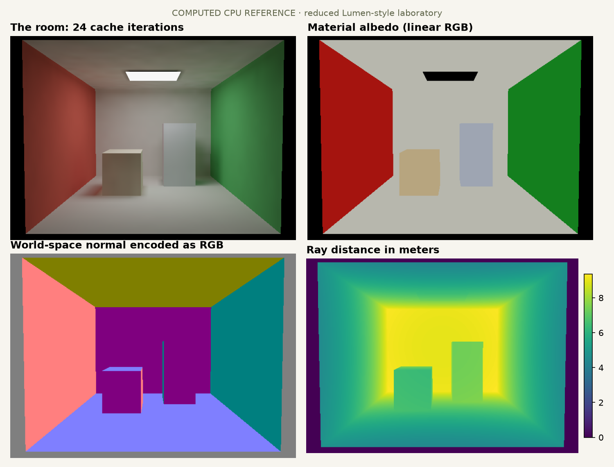
The camera starts at (0, -4, 1.65), looks toward (0, 2.8, 1.4), and uses a 43-degree vertical field of view. The reference image contains 560 by 400 pixels. Every primary ray chooses the nearest valid intersection with the room's rectangles. Its hit point, normal, and material identify a visible surface. This is our equivalent of the information a deferred renderer makes available through depth and its GBuffer; the reference uses ray intersections to keep the geometry code short.
A GBuffer records the surface visible from this camera. That is not enough to shade indirect light. Imagine a ray leaving the back of the short box and hitting the red wall. Its destination may have no visible pixel in the camera image. We therefore need a second, camera-independent way to find material and lighting at that destination. This is the reason for a surface cache, not merely an optimization of the camera's GBuffer.
We also need to separate two questions that are often conflated. A visibility representation answers where a ray stops. A lighting representation answers what radiance arrives from there. Triangle intersections, distance fields, and screen depth can answer the first question with different coverage and precision. A material evaluation, a surface-lighting texel, or a directional probe can help answer the second. A distance-field hit has no inherent color; a bright cached texel does not prove that a receiver can see it.
All computed results use a black environment, fixed geometry, Lambertian diffuse transport, and one rectangular emitter. The reflection experiment adds a microfacet model only for the camera-visible tall box. This deliberately leaves indirect glossy paths out of the diffuse transport solve. It lets us observe the major representations without hiding errors behind a complex scene. The downloadable scene description records every face, bound, normal, and material; the computed arrays retain linear values before display conversion.
The same layout in the actual Unreal renderer
The Unreal project uses seven separate cube components sharing one mesh asset, a movable rectangular light, five material assets and fixed exposure. Coordinates convert from meters in the reference lab to centimeters in Unreal, with X reflected to preserve the red-left camera composition. The engine image below therefore provides a corresponding scene, not a radiometrically matched reference: Unreal's light units, material model, temporal reconstruction and tone mapping differ from the reduced solver.
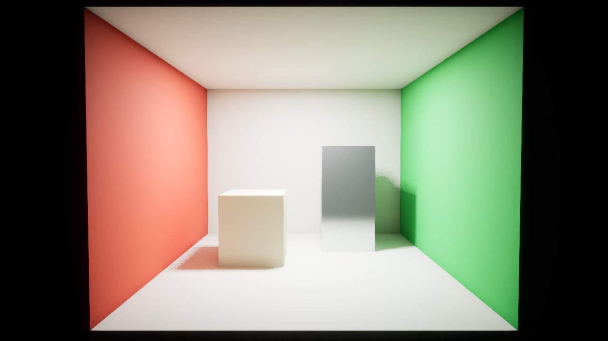
The baseline enables Lumen GI and reflections, generates mesh distance fields, supports hardware ray tracing, and explicitly selects software Lumen tracing with r.Lumen.HardwareRayTracing=0. Screen traces remain enabled. The light is 2,400 lumens with a 130 by 120 cm source. The glossy block uses metallic 0.85 and roughness 0.12; the reference renderer's reduced material equations are not identical. Exact commands and scene edits are recorded in the capture report, and actor/component paths in the inventory.
Indirect illumination starts with an integral, not a light list
A surface looks bright because radiance leaves it toward the camera. Radiance describes directional light transport: both the position and the direction matter. At an opaque surface, outgoing radiance consists of emitted light plus reflected incoming light. A compact expression of that relationship is the rendering equation:
LaTeX source
L_o(x,\omega_o)=L_e(x,\omega_o)+\int_{\Omega^+}f_r(x,\omega_i,\omega_o)L_i(x,\omega_i)\max(0,n\cdot\omega_i)\,d\omega_i.Here x is the surface point, n its normal, ωₒ the direction toward the observer, and ωᵢ a direction from which light arrives. Lₑ is emission. The bidirectional reflectance distribution function, or BRDF, is fᵣ; it describes how the surface redistributes incoming light into the outgoing direction. The cosine factor accounts for the projected area that incoming light sees. The integral sums the contributions of directions over the relevant hemisphere.
This formula is short because it hides the world in Lᵢ. Follow an incoming direction from the floor and it may reach the matte block. The radiance leaving the block depends on light arriving at the block. Some of that may have come from the wall, and some from the ceiling light. Thus even the floor's illumination can depend on surfaces invisible to the camera and on repeated interactions. A direct-light list evaluates only selected, simpler connections within this larger problem.
For a perfectly diffuse teaching surface with reflectance ρ, the BRDF is ρ / π. The remaining cosine-weighted integral is irradiance, E, giving outgoing diffuse radiance ρE / π. This makes a useful distinction: the incoming illumination can be shared across similar nearby receivers, while each receiver still applies its own reflectance. A red wall does not merely receive “red lighting”; it changes the spectrum of the light it subsequently reflects into the room.
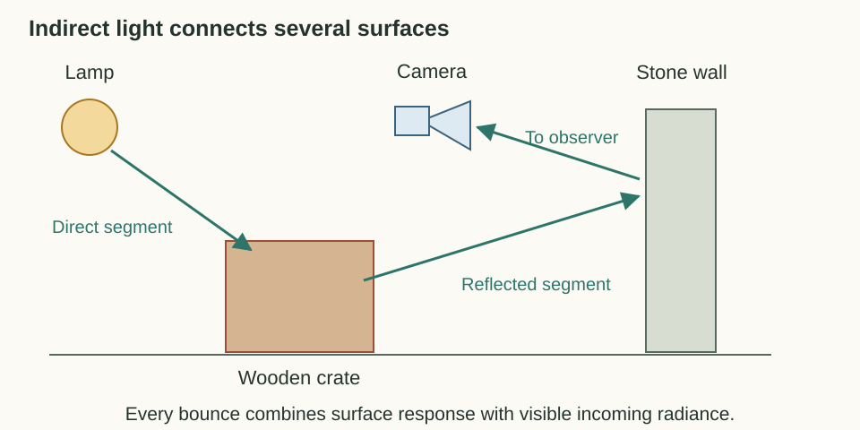
A brute-force numerical solution traces many paths and averages their contributions. Monte Carlo integration estimates an integral by sampling directions. For directions drawn with probability density p(ω), each sample is weighted by the integrand divided by that density. More samples reduce random error, but convergence is slow: for ordinary independent sampling, standard deviation decreases roughly with the square root of sample count. Halving noise therefore tends to demand about four times as many samples, not twice.
At 1920 by 1080, the camera has a little over two million pixels. Even one independent ray per pixel is millions of ray queries per frame, before multiple bounces, reflections, transparency, or shadows. One ray also gives a very unstable estimate of a broad directional integral. Real-time GI therefore cannot be understood only as “use a fast ray-tracing API.” It needs a strategy for choosing queries, sharing their results, limiting representation cost, and reconstructing a stable image from incomplete information.
Lumen makes several separations to enable that strategy. The representation used to intersect a ray can differ from the representation used to retrieve material and lighting at the intersection. Expensive incoming-light estimates can be stored at selected spatial locations rather than recomputed independently for every final pixel. Lighting information can persist across frames, while validity tests decide where history is reusable. Each separation introduces approximation and a possible failure mode, but also removes work that otherwise repeats.
The rest of the article will keep three questions distinct. Where does a ray hit? What radiance is available at that hit? How should sparse radiance samples be reconstructed into illumination at the camera's visible surface? Distance fields or triangle acceleration structures help with the first. Surface caches and hit lighting help with the second. Screen probes, radiance caches, integration, and temporal filtering help with the third. Lumen is the coordinated system that connects these answers; none of the individual structures is “the GI” by itself.
Turn “light bouncing around” into a solvable equation
Let be a surface point, its outward unit normal, and a unit direction toward an observer. Radiance is the light leaving that point in that direction. Radiance has units of power per projected area per solid angle. It is directional: a mirror can be bright from one direction and dark from another even though the surface point is unchanged.
For an opaque reflecting surface, split outgoing radiance into self-emission and reflected incoming light. The BRDF states how strongly a small incoming directional contribution is scattered toward the observer. Projecting that incoming direction onto the surface contributes the cosine factor:
LaTeX source
L_o(x,\omega_o)=L_e(x,\omega_o)+
\int_{\Omega^+(n)} f_r(x,\omega_i,\omega_o)
L_i(x,\omega_i)(n\cdot\omega_i)\,d\omega_i.Here is the outward hemisphere. Incoming radiance is itself outgoing radiance from the first visible surface along the ray: . A ray escaping our room returns zero. Thus the equation is recursive across surfaces. The same relation explains a second bounce, a tenth bounce, and the color bleeding in the room; no separate “color bleed effect” is needed.
For a Lambertian surface, , where RGB reflectance lies between zero and one. Why divide by pi? A constant incoming radiance must not gain energy when reflected by a white diffuse surface. In spherical coordinates, , so:
LaTeX source
\int_{\Omega^+}\cos\theta\,d\omega
=\int_0^{2\pi}\!d\phi\int_0^{\pi/2}\cos\theta\sin\theta\,d\theta
=2\pi\left[\frac{\sin^2\theta}{2}\right]_0^{\pi/2}=\pi.The factor therefore returns exactly the fraction of a constant illumination field. Define irradiance . Diffuse outgoing radiance is . A probe that stores irradiance cannot be substituted for a probe that stores directional radiance; their units and consumers differ.
The GPU cannot recursively solve the full equation at every visible point within an ordinary frame budget. Our first reduction is to discretize diffuse outgoing radiance over surfaces. Our second is to sample directions instead of integrating every direction. Our third is to reuse estimates across locations and frames. Each reduction introduces a specific error: finite spatial resolution, sampling noise, interpolation bias, or stale history. Keeping those error sources distinct makes debugging tractable.
This equation also clarifies a boundary with the main renderer. Lumen contributes estimates of indirect diffuse lighting and reflected radiance to the broader shading pipeline. It does not replace the existence of surface materials, camera visibility, all direct-light evaluation, or the final display transform. In our lab, direct lighting is deliberately computed separately so that a second bounce can be inspected without double-counting the light source.
Derive the estimator before choosing a sample pattern
A ray gives one directional observation; lighting is an integral over directions. Let and choose a normalized probability density with respect to solid angle. It must be positive wherever can be nonzero. Insert into the integral and interpret it as an expectation:
LaTeX source
I=\int g(\omega)\,d\omega
=\int \frac{g(\omega)}{p(\omega)}p(\omega)\,d\omega
=\mathbb E_p\!\left[\frac{g(\omega)}{p(\omega)}\right],
\qquad
\widehat I_N=\frac1N\sum_{j=1}^N\frac{g(\omega_j)}{p(\omega_j)}.Linearity of expectation gives . For independent identically distributed samples with finite second moment, cross-covariances vanish and:
LaTeX source
\operatorname{Var}(\widehat I_N)
=\frac1N\left[\int\frac{g(\omega)^2}{p(\omega)}\,d\omega-I^2\right].This explains both the familiar inverse-square-root reduction in noise and the value of importance sampling: place probability where the integrand is large. It also explains why “trace more bright directions” is incomplete. The contribution must be divided by the density that generated it. A density in texture-coordinate space cannot be used as though it were a density in solid angle; the coordinate transformation's Jacobian must be included. The general probability and estimator framework is developed in PBRT's Monte Carlo chapter; the derivation above specializes it to our hemisphere integral.
For diffuse reflection, choose . The normalization follows from the cosine integral we already evaluated. Multiplying by the spherical-coordinate Jacobian gives joint coordinate density . Its azimuthal marginal is uniform, while its polar marginal is . Integrate the latter to obtain the cumulative distribution:
LaTeX source
F_\theta(\theta)=\int_0^\theta 2\sin t\cos t\,dt=\sin^2\theta.
\quad
u_1=\sin^2\theta\Rightarrow
\sin\theta=\sqrt{u_1},\quad \cos\theta=\sqrt{1-u_1};
\quad \phi=2\pi u_2.For independent uniform , construct . Rotate this direction through an orthonormal tangent, bitangent, and normal basis at the receiver. The basis preserves solid angle. For Lambertian reflection, the BRDF and cosine then cancel the PDF exactly:
LaTeX source
\widehat L_{\rm diffuse}
=\frac1N\sum_j\frac{(\rho/\pi)L_i(\omega_j)\cos\theta_j}{\cos\theta_j/\pi}
=\frac{\rho}{N}\sum_j L_i(\omega_j).This is why the reference code can average incoming radiance and multiply by albedo. That shortcut is valid because of a particular sampling distribution and BRDF, not because diffuse lighting is always a plain average. With uniform hemisphere sampling, , each sample instead contributes .
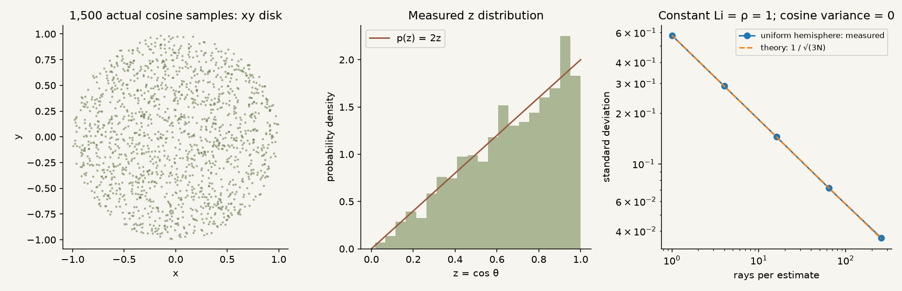
The constant-light variance follows directly: uniform-hemisphere is uniform on , so the sample contribution is , its expectation is one, and its second moment is . The variance is . A sampler that fails this test should not be debugged inside a moving, denoised game scene.
Lumen can also guide samples using previous lighting estimates. In the inspected shader, luminance supplies a lighting PDF which is normalized over directional texels. That is useful guidance, but old lighting is not truth: an emitter can turn on where the old density was tiny. A robust general mixture includes a component with support everywhere needed, such as with . Select a component with its mixture probability, then divide by the full mixture density, not merely the selected component's density. This mixture is an implementation recommendation for our renderer, not a claim that every Lumen permutation uses this exact formula. Lumen's luminance-guided directional PDF.
Combine sampling strategies without counting light twice
The room gives us an awkward distribution of light. A ceiling emitter occupies a small set of directions; broad wall reflections occupy many directions; a glossy lobe may be much narrower than either. One sampler cannot be efficient for all three. This is the point at which “importance sampling” must become an explicit probability calculation. Every generated direction has a density with respect to a specified measure, and every contribution must be divided by the density that actually generated it.
Write the outgoing reflected radiance integral as , where . Suppose strategy A samples the light and strategy B samples the bidirectional scattering distribution function (BSDF), which reduces here to the reflective BRDF. Their directional densities are and , both in inverse steradians. Select A with probability , then sample its conditional density; otherwise use B. The law of total probability gives the marginal density
LaTeX source
p_{\mathrm{mix}}(\omega)=a\,p_A(\omega)+(1-a)\,p_B(\omega),\qquad 0<a<1.The resulting one-sample estimator is . To verify it, integrate over the random direction rather than appealing to intuition:
LaTeX source
\mathbb E[\widehat I]=\int_{\Omega^+}p_{\mathrm{mix}}(\omega)\frac{g(\omega)}{p_{\mathrm{mix}}(\omega)}\,d\omega=I.This cancellation requires nonzero sampling support wherever the integrand contributes. A learned probe distribution that assigns zero probability to a newly revealed bright direction cannot discover that direction. A practical sampler mixes an importance distribution with a broad fallback distribution. The mixture weight and the full marginal density belong in the estimator; choosing a direction with a mixture and dividing by only the selected component's density is a different estimator and generally wrong without the corresponding selection-probability treatment.
Multiple importance sampling also allows a fixed number of samples from each strategy. Let A provide independent samples and B provide . Weight each strategy's contribution by a function such that wherever the integrand is nonzero. Then
LaTeX source
\widehat I=\frac{1}{n_A}\sum_{j=1}^{n_A}\frac{w_A(\omega_{A,j})g(\omega_{A,j})}{p_A(\omega_{A,j})}+\frac{1}{n_B}\sum_{j=1}^{n_B}\frac{w_B(\omega_{B,j})g(\omega_{B,j})}{p_B(\omega_{B,j})}.LaTeX source
\mathbb E[\widehat I]=\int w_Ag\,d\omega+\int w_Bg\,d\omega=\int g\,d\omega.The balance heuristic chooses ; the power heuristic replaces each by . These choices alter variance, not the identity above. A strategy with zero density receives zero weight there. The original analysis is in Eric Veach's thesis. This derivation is an implementation tool for the reference renderer and for future extensions; it is not a claim that every Lumen pass uses this particular two-strategy estimator.
A light sampler often begins with area, not direction. Choose a point on an emitter with area density , let , and let be the angle between the light's normal and the direction toward the shading point. The small patch projects to an area perpendicular to the connecting ray. On a sphere of radius , solid angle is projected area divided by :
LaTeX source
d\omega=\frac{|\cos\theta_y|}{r^2}\,dA,\qquad p_\omega(\omega)=p_A(y)\frac{r^2}{|\cos\theta_y|}.The equality of probability gives the second expression. A uniformly sampled rectangle of area has . Visibility must still be tested, and the emitting side must face the receiver. When the sampled point is nearly tangent, its directional density becomes large; this is geometry, not a reason to drop the Jacobian. Mixing the area density directly with a BSDF density in inverse steradians adds incompatible quantities.
There is another bookkeeping trap: the ceiling light is represented both by a light list and, potentially, by emissive geometry. If a path estimator samples it explicitly and then traces a BSDF ray that reaches it, those are two sampling strategies for the same transport contribution. Combine them with appropriate weights or partition the path classes deliberately. Simply adding both unweighted estimates doubles that contribution. Conversely, disabling emissive hits entirely loses illumination from emitters absent from the explicit light list. The implementation must say which estimator owns each path class.
Caching adds approximation beyond Monte Carlo variance. The expectation proofs above assume the function is the actual integrand being evaluated. Replacing a hit's radiance with a low-resolution, stale, or interpolated cache value changes that function. An unbiased estimator of the cached function can still be a biased estimate of the physical scene. More rays reduce sampling noise; they do not repair a missing wall in an SDF, absent surface-cache coverage, or an old lighting value. This distinction explains why the later debug sequence inspects representations before increasing ray counts.
Choose what the ray is allowed to see
A ray consists of an origin, a direction, and an interval along that direction. The basic intersection question asks for the first relevant surface inside that interval. To answer it cheaply, Lumen can use information already available in the camera's image, distance-field representations of world geometry, or hardware-accelerated triangle intersections. These routes differ in what geometry they know about and how accurately they represent it.
A screen trace walks against the depth representation of the current camera image. It is attractive because visible depth and shading already exist, including fine detail and deformation represented in that image. But the screen is a limited window into the world. It contains no general information about the backs of visible objects, fully hidden surfaces, or geometry outside the view. A ray that leaves the screen or cannot establish a valid hit needs another representation. A screen-space result cannot become a complete world-space visibility solution simply by taking more steps.
This limitation explains a characteristic artifact. Put a bright emissive sign just outside the camera view but in a position that should illuminate the block. If the sign is represented only through screen information, its contribution can change when the camera turns toward it even though the sign and block did not move. That view dependence identifies missing or inadequate world-space representation. Disabling screen traces temporarily can reveal the underlying gap, but removing a useful first tracing stage is a diagnostic experiment rather than a universal quality improvement.
The inspected screen-probe code initializes screen traces and hierarchical depth traversal to enabled. It then compacts unresolved work for later tracing stages. In software-tracing configurations, relevant passes trace mesh signed distance fields and heightfields, followed by remaining global-field and radiance-cache work. The screen-trace controls and trace scheduling show both the layered approach and the fact that hardware and software choices are conditional. It would be inaccurate to say that every Lumen ray always traverses every representation in a fixed sequence.
A signed distance field stores a spatial function whose value approximates distance to a surface, with sign distinguishing inside from outside when the representation supports that distinction. A ray can advance by a distance estimated to be safe rather than test every triangle. The field trades exact triangle geometry for a sampled volume. Thin features, small gaps, and highly nonuniform scaling challenge that representation because finite spatial resolution can erase or distort them. Object fields retain local detail, while a global field combines information over a larger surrounding region at a different resolution and update cost.
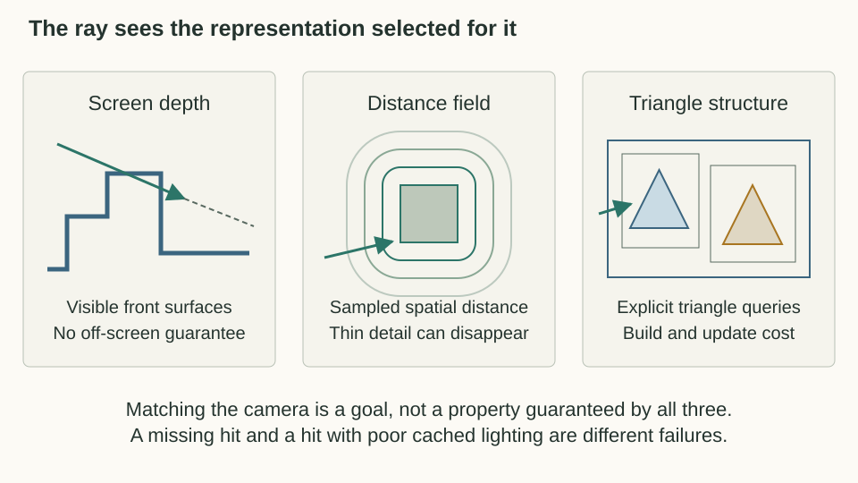
Hardware ray tracing uses acceleration structures to skip groups of triangles efficiently. A bottom-level acceleration structure, or BLAS, organizes geometry, while a top-level acceleration structure, or TLAS, organizes instances and their transforms. Reusing one mesh in many places can reuse its geometric structure while adding instances above it. Deforming the geometry can require rebuilding or updating its lower-level representation. Hardware support accelerates traversal and intersection; it does not eliminate the cost of constructing and maintaining the scene that rays traverse.
Nanite adds a particularly important version-dependent choice. In this 5.8.1 checkout, r.RayTracing.Nanite.Mode initializes to zero: fallback mesh. Mode one selects a streamed-out mesh path. Mode two selects cluster acceleration structures, or CLAS, and falls back when the device does not support the required cluster operations. These modes and capability checks mean that neither “Lumen always traces the exact visible Nanite triangles” nor “hardware tracing can only ever use the old fallback mesh” is correct for the inspected engine.
If the camera displays fine Nanite stone chips while the selected ray-tracing representation is smoother, an indirect or reflection ray can hit a surface at a slightly different place. Screen traces may conceal some differences for visible regions, but cannot repair all off-screen cases. A useful comparison is therefore the visible mesh against the actual tracing representation in the active configuration. The correct fix depends on whether the error comes from coarse fallback geometry, field resolution, deformation support, or biased ray starts, rather than from a single generic “Lumen quality” setting.
Trace a ray through empty space without testing every triangle
For our rectangles, exact intersection is cheap: solve the ray's plane equation, test its two in-plane bounds, and choose the smallest positive distance. We retain that implementation as a reference. A more general scene benefits from an acceleration structure or a distance representation. A signed distance field gives positive distance outside a solid, zero on its boundary, and negative distance inside. It describes geometry, not illumination.
For an axis-aligned box centered at with half-extents , first calculate componentwise excess beyond its bounds: . Positive components identify directions in which the point lies outside. Their Euclidean length is the distance to an outside face, edge, or corner. If every component is nonpositive, the largest component is the signed distance to the nearest inside face:
LaTeX source
d_{\rm box}(x)=\|\max(q,0)\|_2+
\min\bigl(\max(q_x,q_y,q_z),0\bigr).The lab models walls as ten-centimeter-thick boxes and uses the minimum distance over the wall and object solids. Outside their union, this minimum is the distance to the nearest solid. The emitter is intentionally absent from this SDF diagnostic; the tested rays stay in a horizontal plane below it. We compare like-for-like visibility against the exact rectangles at that height, rather than claiming an all-scene comparison with mismatched geometry.
The safe stepping rule follows from a geometric bound. If a field is Lipschitz with constant , then . At any zero-surface point , this becomes . Therefore no zero can be closer than . For a normalized ray direction and an exact outside distance field, :
LaTeX source
r(t)=o+t\omega,\quad \|\omega\|=1,
\qquad t_{k+1}=t_k+d(r(t_k)).Each step crosses a sphere known to contain no surface in its interior. Stop when distance falls below a tolerance, the ray leaves the tracing domain, or a maximum iteration budget is exhausted. An exhausted budget is an unresolved trace, not evidence of a miss. Grazing rays converge slowly because distance to the surface can be tiny while remaining distance along the ray is large. This argument is the foundation of Hart's sphere tracing method.
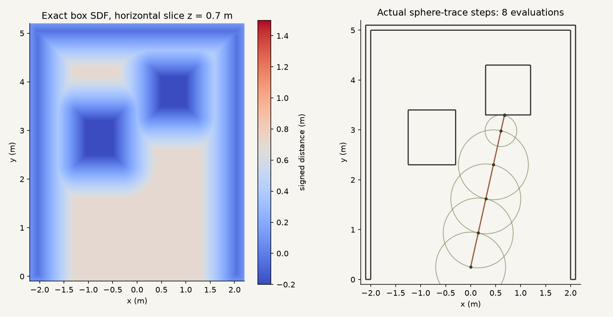
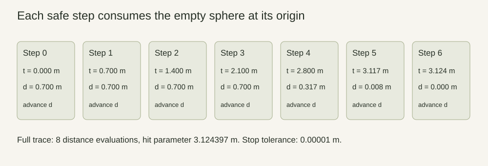
A regression makes that distinction concrete: a ray starting at (0, 0.25, 0.0001) meters and traveling along +Y stays only 0.1 mm above the floor. After 256 safe advances it has traveled roughly 0.0255 m, although exact intersection places the back-wall hit at 4.75 m. The marcher reports budget_exhausted and an undefined hit distance, not a miss. A production consumer must retry, use a fallback, or carry uncertainty rather than replace this unresolved trace with sky lighting. The 256 ordinary horizontal validation rays all resolve; this additional grazing ray deliberately does not.
Unreal uses sampled mesh distance fields and a coarser global representation, not our analytic box function. Sampling, quantization, mip selection, nonuniform scale, and finite trace footprints complicate the bound. If an interpolated sampled field has a known absolute error bound , a conservative outside advance is . A practical positive minimum step can improve progress, but it gives up the strict no-crossing guarantee unless accompanied by a suitable intersection strategy. Thin geometry is especially vulnerable when representation resolution exceeds wall thickness.
The current screen-probe shaders have separate mesh-SDF tracing and voxel/global-scene tracing paths. The latter can limit a trace when valid radiance-cache coverage is reached; it constructs a cone-trace input and requests scene-voxel tracing under the corresponding shader permutation. Thus “trace the SDF” is one stage in a larger dispatch and fallback policy. Mesh-SDF path; radiance-cache coverage and voxel tracing.
The lab's 256 horizontal test rays all agree with exact geometry on hit versus miss. Their largest hit-distance difference is approximately 0.121 millimeters. This validates the analytic marcher and tolerance for those rays. It does not validate a voxelized field, thin imported meshes, or every direction. Those are separate tests an implementation must add when it replaces the analytic field with actual mesh data.
Compare Unreal's local and global distance representations
The mesh distance-field visualization and global distance-field visualization answer where software traces can intersect. They do not show a lighting cache. The room's strongly nonuniformly scaled shared cube is an intentional compact authoring example, but transformed mesh distance fields remain approximate and thin geometry is a difficult case. The CPU lab uses analytic box distances; this makes it a useful controlled geometric reference, not a bit-for-bit reproduction of Unreal's sampled fields.

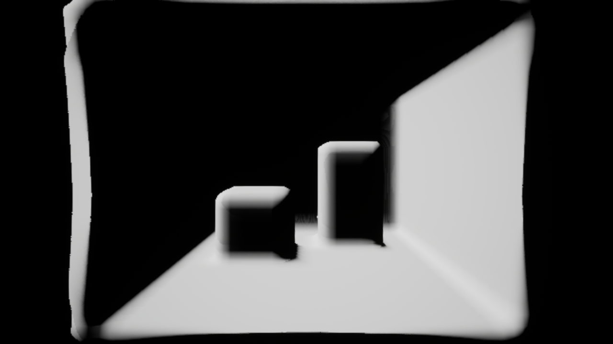
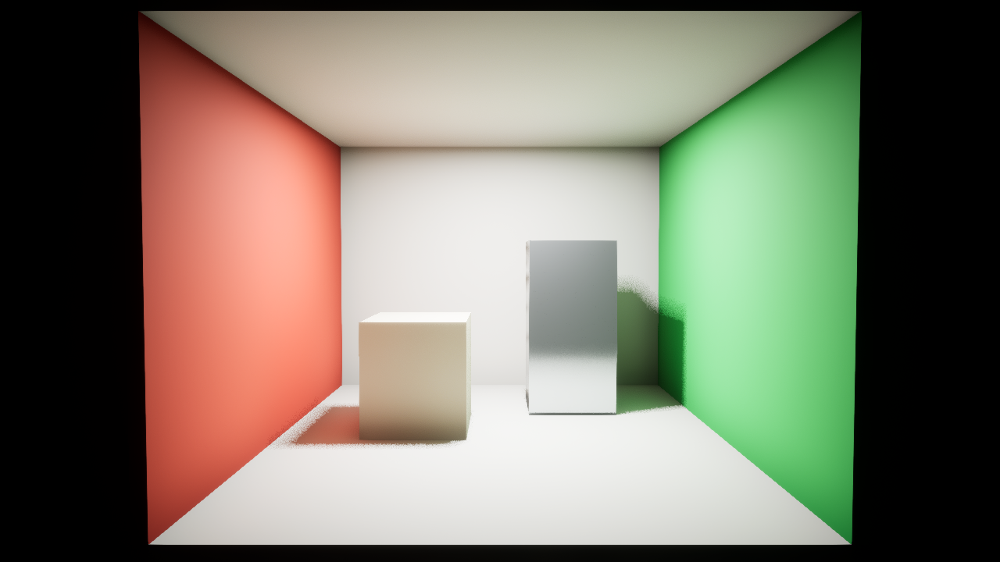
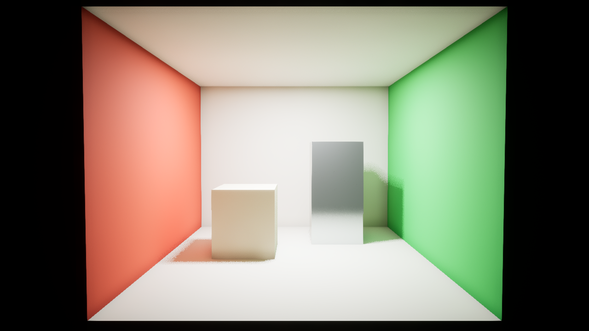
A hit position is not yet a lighting answer
Suppose a ray from the floor intersects the block. The intersection gives a position and some identity, but the GI calculation needs light leaving that position. Re-evaluating the complete material and lighting there for every ray is expensive. Lumen's Surface Cache provides reusable surface information so many queries can obtain an approximation without independently reconstructing every material and every lighting interaction.
The cache begins with parameterization: a way to map portions of a mesh surface into storage that can be sampled. Lumen uses cards, which are oriented capture regions associated with the mesh. From a card's view, the engine captures surface properties into textures. The card is not a replacement billboard that the camera renders as the object. It is an addressable view of the surface for another rendering task. Several cards are needed because one direction cannot observe every side or every concavity.
For the block, imagine captures looking toward its front, back, top, and sides. A ray hit on the front can project into the suitable card and sample the captured surface properties. A deep recess that no selected card can see lacks good coverage even though the ray intersection itself was correct. More rays toward that recess will not create missing card coverage. This is the first reason to separate intersection quality from hit-lighting quality.
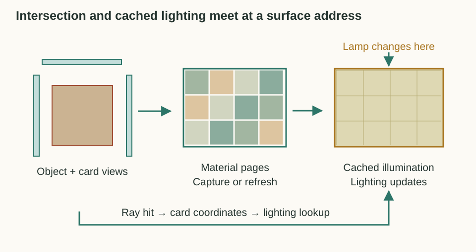
The physical textures form atlases divided into pages. A logical card can need different resolution depending on its importance and the views sampling it. Requests, mappings, and budgets decide which physical pages exist and which are refreshed. This is another virtualized representation, distinct from Nanite geometry pages and shadow pages. All three use pages because bounded demand-driven storage is useful, but the payload, validity rules, and consumers differ.
The current card capture implementation contains both mesh material shader paths and Nanite-aware capture behavior. It has separate LOD controls for static meshes and Nanite captures. This is one real technical connection between Nanite and Lumen: efficient geometry selection and multi-view rendering can make repeated material captures affordable. Lumen does not require that every surface be rendered by Nanite, and Nanite does not intrinsically calculate global illumination. They cooperate through capture work and shared scene information.
After material data is available, the cache's lighting can be updated on a different schedule. Changing the ceiling light's intensity should change illumination even if the block's wood texture remains identical. Changing the wood's albedo can require material recapture and then lighting updates even if the block's position remains fixed. The current capture controls limit pages and texels captured per frame and allocate part of the budget to refreshing existing material captures. The scene lighting controls independently govern direct-lighting and radiosity update budgets. These are multiple queues of work, not one instantaneous “rebuild GI” operation.
Radiosity is the diffuse exchange part of this cached lighting story. A surface lit by the ceiling light becomes a source of reflected light for other surfaces; those surfaces can in turn illuminate more surfaces. Repeatedly updating an estimate of that exchange propagates additional diffuse bounces without starting a long independent path at every camera pixel. The current Lumen radiosity implementation explicitly describes a Surface Cache gather for multibounce diffuse and exposes probe spacing, angular sampling, and filtering controls. This is separate from the final screen-probe gather: it improves the reusable lighting that later queries can find at surfaces.
Iteration and caching explain both an advantage and a limitation. A wall's computed indirect illumination can serve many camera and reflection queries, amortizing its cost. After the ceiling light changes, however, the surfaces that depended on its old contribution must receive fresh estimates before all later bounces agree. Filtering suppresses noise but can spread energy across insufficiently separated surfaces; limited updates preserve frame time but delay convergence. Increasing the number of rays in the final gather cannot by itself accelerate every upstream exchange that those rays sample.
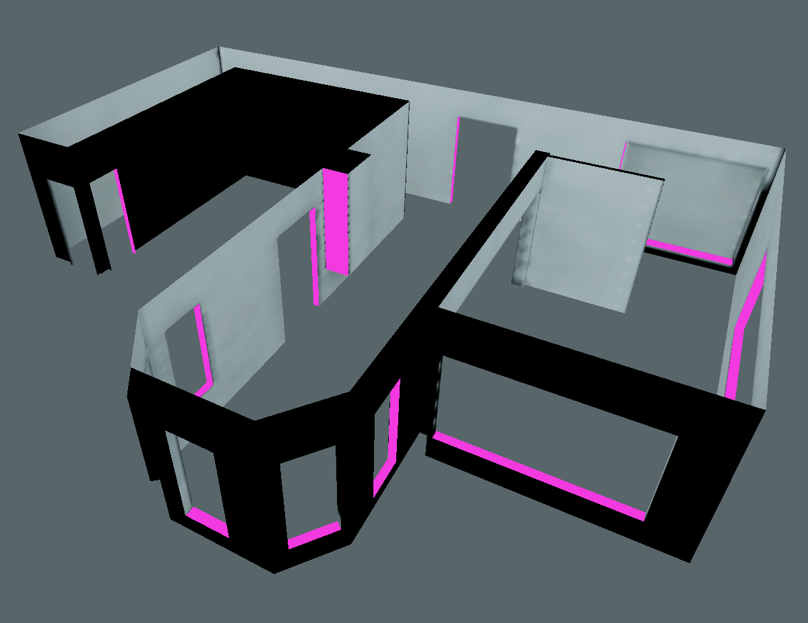
Asset structure affects coverage. A single mesh containing an entire room, furniture, and recessed passages is harder to parameterize usefully than modular surfaces with understandable orientation and extent. Increasing card count may help, but it spends memory and capture work and cannot make every pathological asset equally good. The practical question is whether the important surfaces that secondary rays hit have appropriate cached data. A visually perfect main-camera mesh can still be poor input for that requirement.
Material view dependence also becomes visible here. A graph that uses the current camera direction to change base appearance may behave differently when evaluated from a card capture direction. The cached result needs an interpretation suitable for off-camera lighting queries. It is possible to provide a simpler or alternate evaluation for an auxiliary rendering context, but that is an authored approximation that should be understood. The Surface Cache is not a promise to replay arbitrary camera-dependent material behavior exactly for every future ray direction.
Give each surface a stable place to store material and lighting
Subdivide the room's planar faces into texels with a target spacing of 23 centimeters. There are 1,985 texels including the emitter. Each texel stores a surface point, a normal, diffuse reflectance, and a face identity. The face's local two-dimensional coordinates map a hit point to the neighboring texels. This is an exact, simple parameterization for rectangles. It is our educational equivalent of an orthographic surface card.
A card is not a replacement mesh. It is a capture direction, a footprint, and a mapping between surface positions and an image. For our planar faces, put an orthographic camera one meter along the normal, looking back at the face. Every covered texel has capture depth one meter. Captured normal and material are constant per face, while captured lighting varies across it. The atlas below therefore contains flat depth islands for a geometric reason; no meaningful depth variation was omitted.
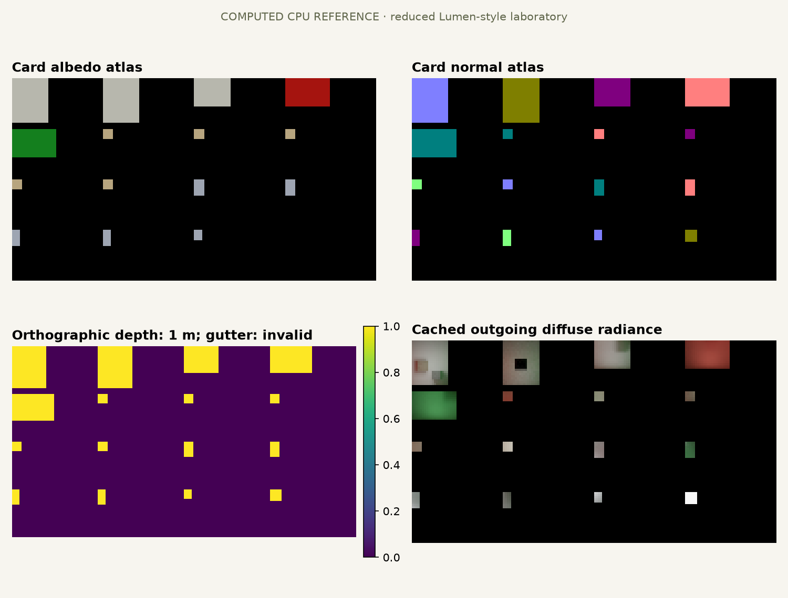
Real meshes require several capture directions, coverage tests, depth, and a policy for choosing among cards. A concavity may be invisible to every selected capture. A large mesh containing the entire room can be harder to cover than separate walls and objects. Epic describes Lumen's automatically generated surface parameterization and the pink visualization used for uncovered regions; its documentation also explains why capture-friendly asset boundaries matter. Lumen Technical Details.
The source makes the mapping concrete. FLumenCard stores local bounds, world orientation and origin, allocated resolution levels, references to the owning mesh-card collection, and per-resolution surface mappings. A card's spatial identity and its current physical storage are different things. This separation is essential when a camera moves, page priorities change, or an atlas runs out of room. FLumenCard in the inspected source.
What FLumenCard contributes to the representation
| Information | Representative members | Why the renderer needs it |
|---|---|---|
| Local capture bounds and axes | LocalOBBOrigin, LocalOBBExtent, local axis indices | Defines the capture volume and local surface mapping. |
| World placement | WorldOBBAxisX/Y/Z, WorldOBBOrigin, LocalToWorldScale | Connects world-space ray hits to the card. |
| Allocated detail | MinAllocatedResLevel, MaxAllocatedResLevel, SurfaceMipMaps | Finds available physical coverage at an appropriate resolution. |
| Ownership and sharing | MeshCardsIndex, build-data indices, sharing identity | Supports instance updates, ownership, and shared representation bookkeeping. |
Capture material before lighting. Changing a light should not force the renderer to rediscover a wall's albedo. Conversely, changing a material should invalidate the captured attributes even if no light moves. Unreal's frame temporaries expose distinct albedo, normal, emissive, and depth atlases, together with direct, indirect, and final lighting atlases. These names encode a useful ownership rule: attributes describe surfaces; lighting buffers contain estimates derived from them. FLumenSceneFrameTemporaries.
What FLumenSceneFrameTemporaries makes available to passes
| Group | Representative resources | Consumer |
|---|---|---|
| Captured attributes | AlbedoAtlas, NormalAtlas, EmissiveAtlas, DepthAtlas | Surface lighting and hit lookup. |
| Lighting estimates | DirectLightingAtlas, IndirectLightingAtlas, FinalLightingAtlas | Lighting updates and traced-ray shading. |
| Temporal statistics | Accumulated-frame atlases and diffuse-lighting second-moment history | History weighting, filtering, and confidence. |
| Addressing and feedback | Card, mesh-card, page-table, card-page, and usage resources | Resolve virtual representation and prioritize resident updates. |
In the reference renderer, the lifetime is simpler: all cards are resident and all texels update together. That removes page faults and update budgets from the first experiment. Once this small system produces correct light transport, the same logical fields can be virtualized. Starting with a page allocator before establishing correct radiance units and cache invalidation would make every visual failure harder to isolate.
Inspect real cards and cached material channels
Unreal's card-placement overlay shows the surface parameterization that supports cache capture. It is not a list of rays, and it is not the physical texture atlas laid out flat. The following cache views query that representation back onto visible geometry. Keeping those forms distinct matters: an apparently continuous shaded wall can be backed by several cards and virtualized physical allocations.

r.Lumen.Visualize.CardPlacement=1 overlay. The seven separate components help expose their independent surface representations. Open image at full size.
r.Lumen.Visualize=5). Coverage problems must be diagnosed before interpreting missing indirect light as a sampling problem. Open image at full size.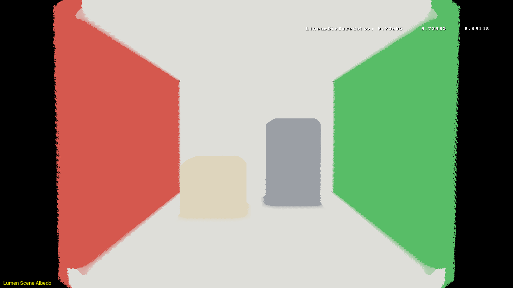
r.Lumen.Visualize=8). This samples the surface representation, unlike the camera GBuffer BaseColor view in the scene essay. Open image at full size.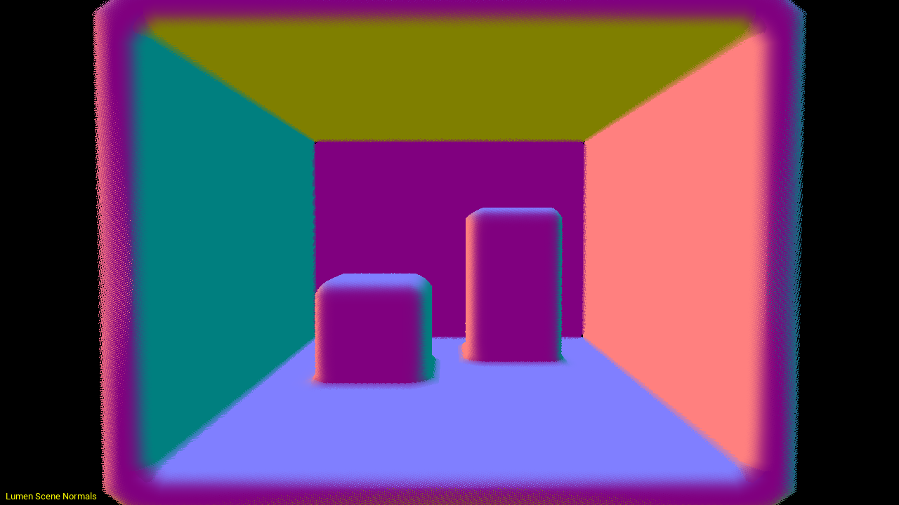
r.Lumen.Visualize=9). Compare surface orientation before interpreting illumination. Open image at full size.Read back the actual GPU atlas
A view projected onto the room can conceal how the cache is stored. We also ran Unreal's DumpGPU facility and decoded the actual GPU resources. The following images are cropped occupied regions of those readbacks. Cache compression was disabled for this diagnostic dump so the formats could be decoded directly. The atlas report records the resource names, formats, full extents, crop coordinates, display transforms and raw-data hashes. These are measured GPU contents, not our CPU lab's atlas rearranged to resemble Unreal.
Lumen.SceneAlbedo, RGBA8, cropped from a 4096×4096 allocation. Stored RGB channels are displayed directly. Open image at full size.Lumen.SceneNormal, packed RG8 channels displayed as red/green with blue set to zero. This is the packed storage encoding, not a decoded world-normal RGB image. Open image at full size.Lumen.SceneDepth, G16 normalized values displayed as grayscale. Card depth encoding is not linear world distance. Compare this storage view with the camera-depth diagnostic in the scene essay. Open image at full size.Illuminate the captured surfaces before asking them to bounce light
Start with the ceiling emitter. Sampling arbitrary hemisphere directions wastes most rays because the light occupies only a small solid angle from many receivers. Instead, sample a point uniformly on its area . The area PDF is . Let and . A small emitter area projects to solid angle , where . Substituting this into the rendering equation gives:
LaTeX source
L_{\rm direct}(x)=\frac{\rho(x)}\pi
\int_A L_e(y,-\omega)\,V(x,y)
\frac{\cos\theta_x\cos\theta_y}{r^2}\,dA,LaTeX source
\widehat L_{\rm direct}(x)=\frac{\rho(x)A}{\pi N}
\sum_{j=1}^N L_e(y_j,-\omega_j)V(x,y_j)
\frac{\cos\theta_{x,j}\cos\theta_{y,j}}{r_j^2}.Visibility is one if no surface blocks the segment and zero otherwise. Both cosines matter. The receiver cosine accounts for projected receiving area; the emitter cosine accounts for the light's projected area. The inverse-square factor emerges from conversion between area and solid angle. A frequent bug is to divide by squared distance again after using a light PDF already converted to solid angle, producing incorrect falloff.
The laboratory integrates the area with an 8 by 8 grid of cell centers and exact shadow rays. This is deterministic midpoint quadrature, not independent Monte Carlo. The preceding estimator is unbiased for genuinely random uniform area samples; the implemented midpoint version is a finite-resolution approximation, particularly near discontinuous shadow edges. We retain 64 samples per card texel so that the direct-light input is stable while studying the noisier diffuse propagation. Changing this to random stratified positions is a small experiment, but its uncertainty should then be measured separately.
The direct-light-only image has a dark ceiling and dark box fronts. That is expected: the downward emitter cannot directly light the ceiling, and the boxes occlude some emitter directions. Direct shadowing is a geometric visibility result. Making these surfaces bright with a uniform ambient term would conceal the very indirect paths we want to implement. They become visible in the next stage because other illuminated surfaces send radiance toward them.
Maintain the convention that the direct buffer contains outgoing diffuse radiance after the receiver's albedo and pi factor. The emitter texels contain emitted radiance instead. A different implementation may store irradiance and multiply by material later, but it must use that convention consistently. If one pass writes irradiance while another assumes outgoing radiance, white surfaces may seem plausible while colored walls reveal severe energy errors.
The full engine integrates surface lighting through dedicated direct-light and radiosity systems with tile selection, light data, shadowing, temporal statistics, and update budgets. The reference's single rectangular emitter isolates the same dependency: captured material and visibility feed surface lighting. It does not reproduce all Unreal light types or its stochastic direct-light implementation. The concrete handoff remains visible in the distinct direct and indirect lighting atlas resources described earlier.
Make the room light itself through a sampled transport operator
Now send 512 cosine-distributed rays from each card texel. Each ray either escapes, hits the emitter, or hits another surface texel. Escapes contribute zero. Emitter hits are excluded from this indirect operator because direct emitter illumination was already evaluated by area sampling. Every other hit records which texel's outgoing radiance will be read. This produces a sparse matrix : entry is the fraction of rays from receiver that hit source texel .
Because these rays were cosine distributed, the diffuse estimator is simply reflectance times the average incoming radiance. Let be the diagonal matrix of one color channel's reflectances, the already computed emitted-plus-direct outgoing radiance, and the total outgoing radiance at every texel. Then:
LaTeX source
L=D+RKL,\qquad
L^{(0)}=D,\qquad
L^{(k+1)}=D+RKL^{(k)}.Expand the first iterations. The first update gives : direct light plus one diffuse reflection of direct light. The next adds . After updates, the sum is . This is the operational meaning of a bounce in this experiment. A cache update iteration is not generally identical to one additional full-scene bounce in a production renderer, because only some cache locations may update each frame.
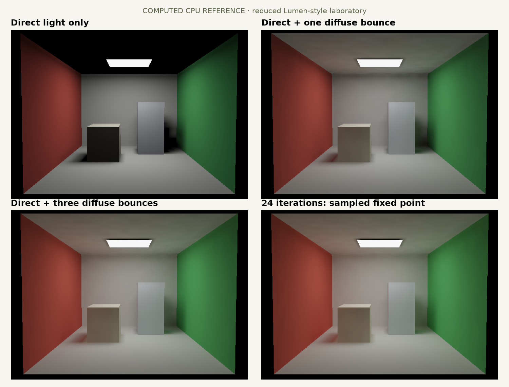
Why does this iteration converge here? Every row sum of is at most one, because each sample chooses at most one destination. The largest reflectance in the scene is 0.72. Thus . For two candidate solutions , the update makes their maximum difference at most 0.72 times its previous value. A unique fixed point exists for this finite matrix, and the Neumann series converges:
LaTeX source
L^*=(I-RK)^{-1}D=\sum_{b=0}^{\infty}(RK)^bD,
\qquad
\|L^{(k)}-L^*\|_\infty\le0.72^k\|D-L^*\|_\infty.This proof applies to the sampled, discretized operator, not to an exact continuum solution. Holding the random rays fixed makes iteration convergence easy to measure but leaves sampling error in . Reusing that same random matrix through a nonlinear inverse also means the final fixed point is not automatically an unbiased estimator of the continuum solution. More cache iterations reduce solve residual; more surface resolution and visibility samples reduce different errors. These are independent quality controls.
Distinguish an iteration update from the residual at the resulting iterate. Write the update map as , the contraction bound as , and the measured change as . The residual at the new iterate obeys . Apply the triangle inequality to the unknown fixed point :
LaTeX source
\|L^*-L^{(k)}\|_\infty\le q\|L^*-L^{(k)}\|_\infty+r_k
\quad\Longrightarrow\quad
\|L^*-L^{(k)}\|_\infty\le\frac{r_k}{1-q}\le\frac{q\Delta_k}{1-q}.With the recorded final update, the error to this particular discrete fixed point is therefore bounded by approximately in the lab's radiance units. The plot reports , not an independently measured continuum error.
The run produces 490,891 nonzero matrix entries. The maximum per-channel update falls from about 0.2305 after the first iteration to after 24. All cached radiance remains finite and nonnegative. These measurements are useful engineering checks: a growing residual can indicate an energy gain, a mistaken PDF, or double-counted emitter contributions. A tiny residual cannot certify correct geometry or remove a biased visibility approximation.
Unreal's radiosity implementation explicitly describes its job as gathering indirect illumination from the Surface Cache to provide multibounce diffuse. It also exposes probe spacing, hemisphere resolution, and spatial filtering controls; its source notes the tradeoff between reduced noise and increased leaking. That is the production counterpart of our operator's sampling and reconstruction decisions. The lab uses a fixed full-scene matrix for clarity, while Lumen schedules and filters GPU work under runtime budgets. Lumen radiosity configuration and stated purpose.
Read direct and indirect cached illumination separately
The next two Unreal views separate direct and indirect surface-cache lighting. Compare them with the computed bounce sequence above. Direct illumination is strongly tied to the ceiling light's visibility. Indirect illumination carries connections between room surfaces. The display scaling and the production cache's representation differ from our CPU arrays, so these images are explanatory diagnostics rather than equal-exposure numerical differences.
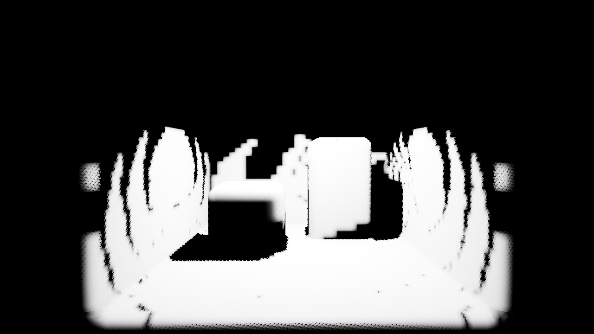
r.Lumen.Visualize=12). Open image at full size.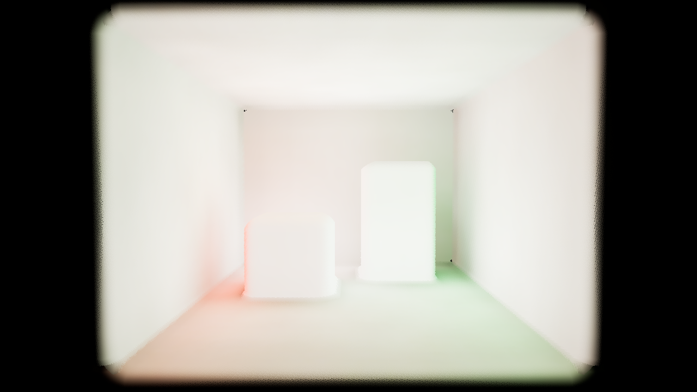
r.Lumen.Visualize=13). It is neither raw albedo nor the complete final camera image. Open image at full size.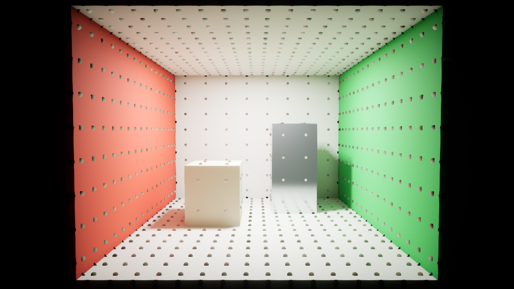
Lumen.SceneFinalLighting, R11G11B10 floating-point RGB, cropped and display-mapped. The atlas stores reusable surface illumination; it is not the final screen framebuffer. Open image at full size.HDR atlas values require a display transform. The exporter applies a recorded per-texture exposure, Reinhard mapping, and the sRGB transfer function. This makes structure visible but means brightness must not be compared numerically across these displayed atlases. Read the linear resources with the documented decoder for quantitative comparisons. The CPU lab's linear arrays provide a smaller inspectable example of why this distinction matters.
Gather light sparsely, then reconstruct it where the camera needs it
The Surface Cache can make a ray hit cheaper to shade, but millions of independently traced directional integrals are still too expensive. Lumen's screen-probe gather shares work across nearby visible surfaces. A probe is a sampling location with a compact directional description of incoming radiance. A screen probe obtains its spatial position from the camera's depth information, traces a set of directions, and stores the resulting directional samples for later filtering and integration.
The screen-space arrangement is useful because it allocates work where the camera needs a result. A coarse grid covers the image, and adaptive logic can add sampling where interpolation would otherwise fail around depth changes or small surfaces. The base downsample factor in this checkout initializes to 16: a nominal screen tile is 16 by 16 pixels before quality-dependent adjustments. This is not the assertion that every 256 pixels always share exactly one probe. The placement and interpolation controls and quality-dependent sizing show why the actual sampling layout is more nuanced.
Picture a probe located on the floor beside the block. Some directions reach the opening, some see the illuminated wall, and some see the block's underside. That directional distribution is valuable to several nearby floor pixels. However, it should not be freely blended onto the top of the block across a depth discontinuity. Similar image coordinates do not guarantee similar world-space illumination. Reconstruction weights therefore use geometry information to decide which samples are relevant.
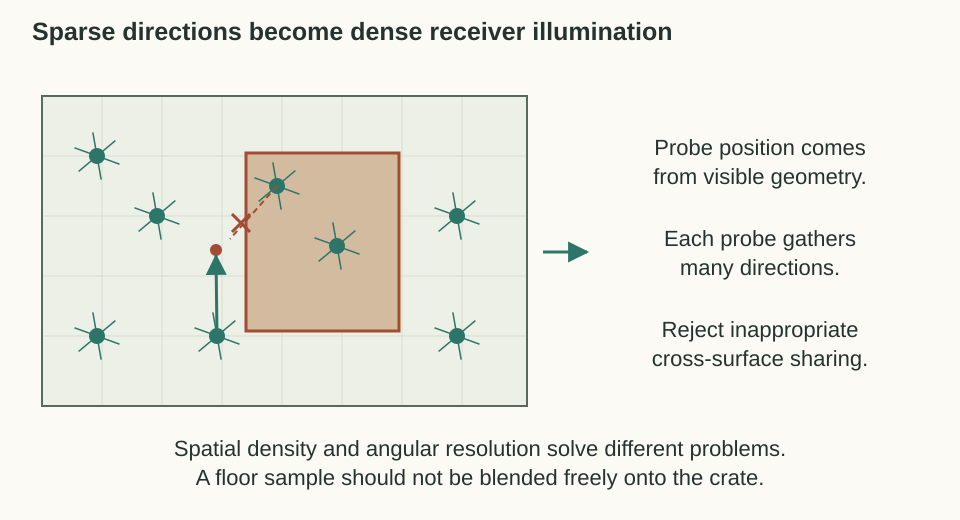
Sampling direction matters as much as placing probes. Uniformly spending directions on empty or dim regions is wasteful when a small subset contributes most of the energy. Importance sampling distributes work according to information about likely lighting contributions and surface response. The estimator must still account for the sampling distribution. A biased guess that simply points every ray at the brightest previously observed region can miss newly important directions and lose energy elsewhere.
World-space radiance caching supplies another layer of sharing. Nearby screen probes may ask similar questions about distant illumination. Instead of retracing the full distant scene for each one, the system can interpolate radiance information maintained at selected world-space probe locations. Clipmaps organize these locations at multiple spatial scales around relevant views. Nearer regions can receive finer spacing, while farther regions use coarser spatial sampling. The cache stores directional lighting, not the material properties captured in surface cards.
That last distinction prevents a common conceptual collapse. A Surface Cache entry is tied to a surface parameterization: it tells us about a represented object surface. A radiance-cache probe is a sample of light in space used to help answer incoming-light queries. A screen probe is positioned according to the visible image and helps reconstruct the final gather. All are caches or probes in an everyday sense, but they differ in location, contents, update schedule, and the error they introduce.
The current screen-probe radiance-cache controls specify clipmap organization and a tracing budget. The update budget is then scaled by lighting update speed and editing state. Meanwhile, the tracing code applies radiance-cache information in the appropriate remaining trace work. These details matter because “increase GI samples” could mean increasing probe density, directional resolution, distant-cache updates, or temporal responsiveness. The chosen setting should match the missing information.
Finally, directional radiance is integrated against the receiver's response. Diffuse illumination averages a broad range of directions; rough specular illumination averages a narrower distribution; a very smooth reflection is sensitive to a much more precise direction. This difference will determine how far the screen-probe result can be reused. It also explains why a floor can have stable diffuse bounce lighting while a mirror in the same scene exposes much more obvious tracing or cache errors.
Record directional light in empty space
A surface cache stores information attached to surfaces. A world probe stores information at a position in space. Place a probe near the middle of the room, trace directions around the sphere, and fetch cached outgoing radiance at each hit. The resulting directional function says what light arrives at that probe from every direction. It can be reused by nearby queries, especially when exact long-distance tracing is too expensive.
Our room contains 69 probes after candidate positions inside solids or too close to surfaces are rejected. Each probe traces a 64 by 32 latitude-longitude set of directions. This layout is deliberately easy to plot. Equal-sized latitude-longitude texels do not cover equal solid angles: texels near a pole subtend less of the sphere. For a cell spanning azimuth and polar angle , integrate the spherical Jacobian exactly:
LaTeX source
\Delta\omega
=\int_{\phi_0}^{\phi_1}\int_{\theta_0}^{\theta_1}\sin\theta\,d\theta\,d\phi
=(\phi_1-\phi_0)(\cos\theta_0-\cos\theta_1).The cell weights sum to . To estimate irradiance for a receiving normal , use directional radiance samples and those solid angles:
LaTeX source
E(n)\approx\sum_j L_j\max(0,n\cdot\omega_j)\Delta\omega_j.This is quadrature over a sampled directional field. The numerical integration remains approximate because radiance and cosine vary inside each cell. The exact sum of weights verifies coordinate handling; it does not make low-resolution lighting integration exact. A bright small emitter may occupy only a few samples. The reference's plots expose that finite angular resolution instead of silently treating a directional texture as uniformly weighted pixels.
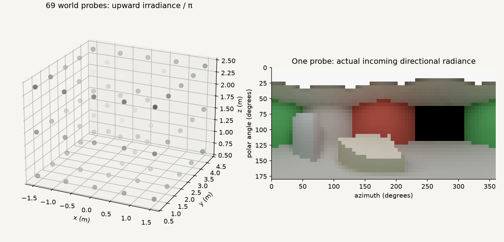
To answer a query between probes, interpolation is necessary. On a regular grid, trilinear weights follow from the query's fractional cell coordinates: for corner bits , multiply the appropriate factors or , and likewise for . The eight weights sum to one. A general normalized blend is . Normalization preserves a constant field, but it does not guarantee visibility correctness.
Our probe positions are filtered around solids, so the demonstration uses eight nearest probes with inverse-square distance weights rather than pretending the filtered set remains a complete regular grid. The comparison additionally gates each contribution by a real visibility ray from the floor query to the probe. A probe behind a box must not illuminate its shadowed side merely because it is nearby. Visibility gating reduces that mistake; it cannot reconstruct missing spatial detail from a coarse set of samples.
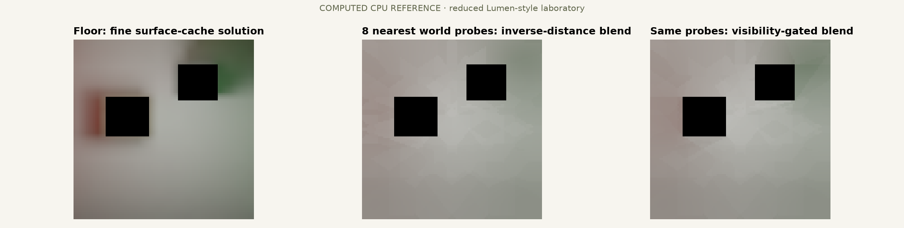
Unreal's radiance cache is budgeted and demand driven. Its update interface states that it marks positions needing coverage, places or reuses probes, and traces a subset before exposing interpolation parameters. Clipmap cell sizes organize coverage at multiple spatial scales. Indirection maps world cells to physical atlas storage; a probe's place in the world should not be confused with a permanent atlas address. UpdateRadianceCaches.
What FRadianceCacheInterpolationParameters supplies to a lighting query
| Information | Representative members | Role in a query |
|---|---|---|
| Coverage and physical address | RadianceProbeIndirectionTexture, clipmap corners and cell sizes, probe offsets | Locate nearby represented probes in the moving world-space hierarchy. |
| Directional light | RadianceCacheFinalRadianceAtlas, optional irradiance and sky-visibility atlases | Return the lighting representation requested by the consumer. |
| Validity and occlusion | Probe-valid, depth, and occlusion atlases | Avoid interpreting uninitialized or incompatible samples as reliable lighting. |
| Resolution and exposure | Atlas texel scales, final resolution, cached-lighting pre-exposure factor | Address samples correctly and convert their stored numerical scale. |
The fields above are present in the inspected interpolation parameter structure. They reveal why a probe cache is more than an RGB grid: addressing, coverage, history, visibility, and units must accompany the colors. The lab keeps every probe resident and traces all of them; a real-time implementation must budget updates and provide defined behavior when coverage is absent.
Find the world-space radiance cache in the running renderer
The world radiance-cache overlay is a spatial view of another reuse mechanism. Its samples represent directional lighting around world locations; the surface cache represents material and lighting associated with surfaces. They can cooperate without being the same data structure. A probe can help answer a directional query that is too expensive to trace fully every time, while a hit against a surface can retrieve that surface's cached lighting.
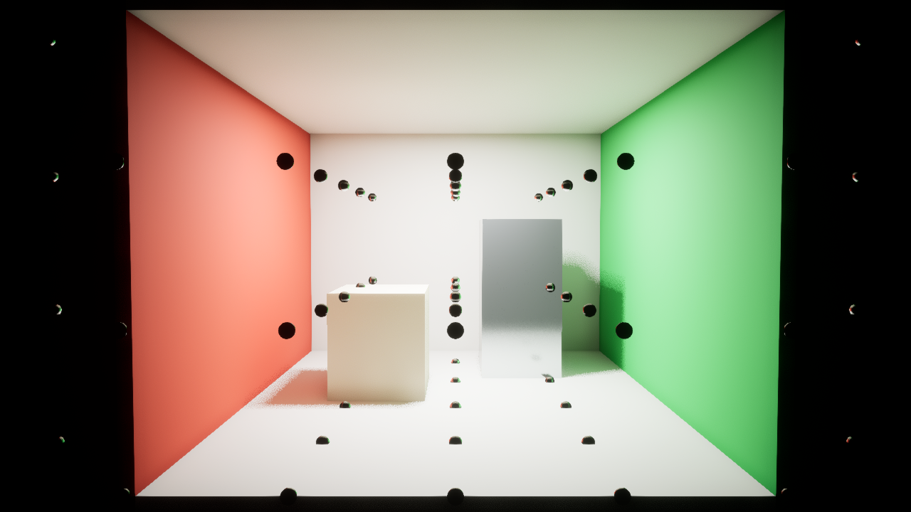
r.Lumen.RadianceCache.Visualize=1 overlay. Visible spheres are probe diagnostics, not emitters added to the scene. Open image at full size.Lumen.RadianceCache.FinalRadianceAtlas, cropped from a 4352×4352 allocation. Open at full size to inspect directional tiles; a large allocated atlas can have only a small occupied strip in this room. Open image at full size.Spend near-field rays where the camera needs them
World probes are reusable but relatively coarse. The camera needs more detail around visible geometry, especially near corners, narrow gaps, and silhouettes. A screen probe starts from a visible surface point reconstructed from depth. It records incoming directional radiance around that point. The screen selects where probes are placed; the rays themselves travel in world space.
The reference places a probe every 12 pixels where geometry is visible, yielding 1,314 probes. It traces 256 cosine directions from each. Emitter hits are removed from these probe contributions because our final composite adds the separately computed direct-light buffer. The average therefore stores indirect irradiance divided by pi. For a nearby visible pixel, the final diffuse contribution is its own material reflectance times an interpolated probe value. Do not multiply by the probe surface's albedo again: the probe represents incoming light, not the outgoing color of its placement surface.
Four nearby probes are considered for each pixel. We weight them by world-space proximity and normal agreement. The normal term is ; the distance term is with distances measured in meters. Normalize the product weights before blending. These constants are explicit choices for this small room, not Unreal defaults. This limited gather illustrates why naive bilinear interpolation in screen coordinates would mix a box front with the wall behind it.
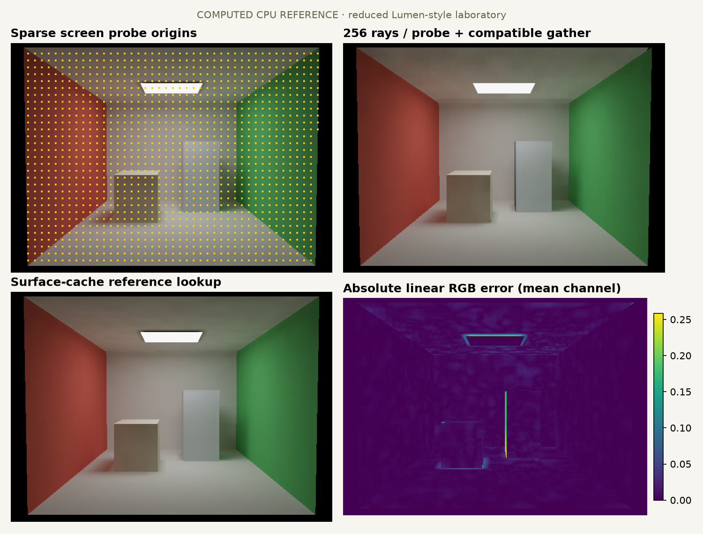
The measured mean absolute linear-channel difference is approximately 0.00467 over visible geometry. That scalar hides spatially concentrated errors, so the error image is part of the evidence. A smooth wall and a box silhouette can have the same average contribution to a global metric while requiring very different reconstruction policies. Adaptive probe placement, disocclusion handling, and normal/depth compatibility are responses to those local failures.
Unreal's screen-probe parameters include separate tracing and gathering resolutions, atlas sizes, downsampling, interpolation depth weights, and importance-sampling resources. A directional tracing layout need not be identical to a filtered gathering layout. The source supports spherical-harmonic or octahedral irradiance formats and specialized integration classifications. Those choices preserve different amounts of directional information and permit different consumers; they should be selected after defining what the later shading pass needs. Screen-probe representation and parameter declarations.
What FScreenProbeParameters describes
| Information | Examples | Why it is separate |
|---|---|---|
| Angular representation | Tracing and gathering octahedron resolutions, gather border resolution | Trace samples and filtered lookup texels serve different operations. |
| Screen placement | Downsample factor, view size, atlas view and buffer sizes | Maps screen tiles to allocated probe storage. |
| Reconstruction policy | Depth interpolation weights, movement thresholds, AO controls | Prevents sharing estimates across incompatible geometry. |
| Guided tracing | Structured importance-sampled ray information in associated parameters | Decouples the desired sample distribution from dispatch layout. |
There is another optimization: use screen depth to test a ray before tracing the scene representation. Project points along the ray into the previous or current view, traverse the depth hierarchy, and look for a geometrically plausible depth crossing. A valid screen hit can exploit detailed visible geometry. A ray that leaves the image, passes behind an ambiguous depth layer, or finds no trustworthy crossing must remain unresolved for a fallback. The depth buffer contains one visible layer; it cannot certify the absence of an off-screen occluder.
The current shader has an explicit screen-texture tracing entry point, records trace status, compacts unresolved work, and provides later mesh-SDF and scene tracing paths. Radiance-cache coverage can terminate a sufficiently distant segment with a cached estimate. These stages are alternatives or continuations under configuration, not a command to trace every ray through every backend. The reference images above use exact rectangle intersections for all probe rays; they do not silently label those intersections as screen traces or Unreal SDF results. Screen trace entry point; unresolved-trace acceptance and compaction.
See screen-probe placement and trace diagnostics
Screen probes are associated with visible receiver samples. They reduce the number of expensive directional gathers relative to tracing a full distribution for every output pixel. The placement and trace overlays below expose their locations and traced work. These debug drawings are intentionally dense: inspect a small region near a block edge and compare it with the depth discontinuity. That is where interpolation and history validation need more care than on the broad back wall.
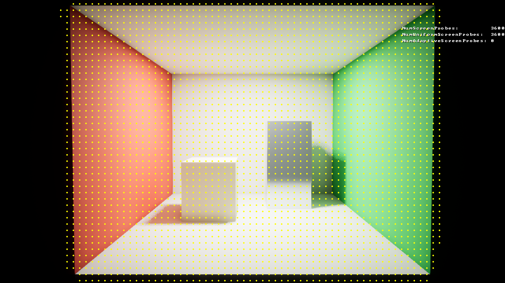
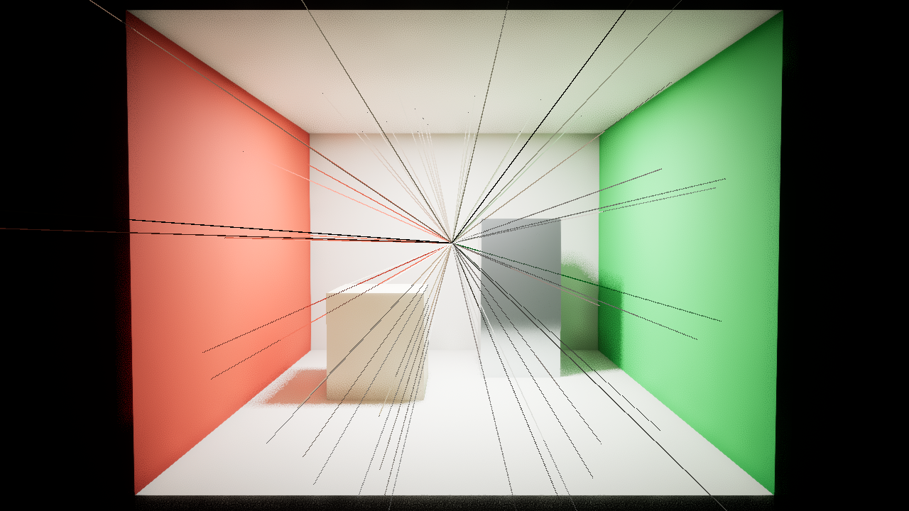
r.Lumen.ScreenProbeGather.VisualizeTraces=1 diagnostic. The CPU trace plots show selected rays numerically; this engine overlay shows runtime debug geometry. Open image at full size.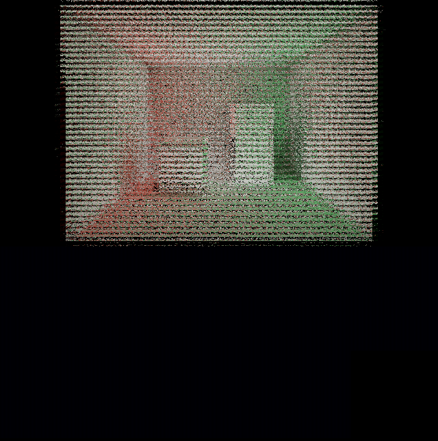
Lumen.ScreenProbeGather.TraceRadiance, R11G11B10 floating point. This is directional gathered data arranged in an atlas, not an ordinary perspective image. Open image at full size.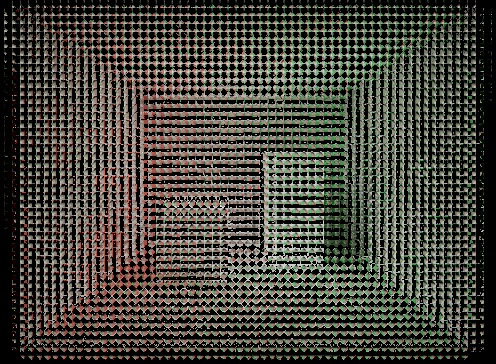
Lumen.ScreenProbeGather.ScreenProbeFilteredRadiance. Crop and exposure differ from the preceding image; compare the organization and processing stages, not their displayed brightness. Open image at full size.A mirror exposes information that diffuse lighting can average away
A diffuse wall integrates light from a broad hemisphere. If one incoming direction is slightly wrong, neighboring directions may soften the visible error. A smooth mirror is much less forgiving. Its outgoing direction corresponds to a narrow set of incoming directions, so it preserves spatial detail and reveals errors in the reflected scene. The distinction is mathematical before it becomes an engine feature: different reflectance distributions require different angular information.
The glossy block in the room sits between these extremes. At high roughness, its broad reflection can reuse coarser directional lighting effectively. As roughness falls, the reflection becomes sensitive to individual off-screen surfaces and highlights. Lumen therefore has dedicated reflection work and controls for which roughness range receives it. The inspected reflection implementation also includes optional radiance-cache reuse for rough reflections, with that reuse control initialized to zero. It would be inaccurate to infer that every reflection always uses the screen-probe radiance cache merely because the option exists.
Reflection intersection and reflection lighting remain separate. A hardware ray can intersect the correct triangle yet obtain an overly simplified light value from a cache. Conversely, detailed hit lighting cannot shade the correct surface if the ray intersected an inaccurate fallback mesh. This distinction is especially useful when a mirror shows the wall in the correct place but omits a sharp ceiling light highlight. The geometry answer may already be adequate; the lighting answer may need a richer evaluation.
In the current source, r.Lumen.HardwareRayTracing.LightingMode initializes to zero, selecting Surface Cache hit lighting. The same control documents a mode that evaluates lighting at hits for GI and reflections, and another that evaluates hit lighting for reflections while retaining cached GI behavior. The mode definitions explicitly retain the Surface Cache for secondary contributions even when hit lighting is selected. “Hit lighting” therefore does not mean that the frame has become an unbiased full path tracer.
Why does full hit evaluation cost more? A ray hit may require material shader execution, texture reads, a shading normal, direct-light selection, and shadow rays. Adjacent rays can hit different materials and unrelated memory, reducing the coherence that makes ordinary surface shading efficient. Masked geometry can require opacity tests during traversal. The current source exposes controls for hit-lighting shadows and opacity handling because these choices change both quality and cost. More accurate illumination at an intersection is a substantial rendering job, not a free switch in the intersection instruction.
Now place a glass pane in front of the glossy block. The camera may need reflection from the glass, transmission through it, reflection from the glossy block, and possibly another surface behind that. An opaque GBuffer stores a single frontmost surface and cannot describe this layered transport by itself. Unreal provides separate translucency-related paths and feature gates; the Lumen card shader compiler in this checkout conditionally allows translucent material captures for supported ray-traced refraction behavior. The capture eligibility logic is more precise than a blanket claim that all glass is either fully supported or absent.
For production diagnosis, begin with a simple opaque mirror, then add roughness, then add glass. If the opaque mirror already sees the wrong block silhouette, investigate tracing geometry. If it sees the correct silhouette but inadequate highlights, compare Surface Cache lighting and the appropriate hit-lighting mode. If the problem appears only after glass is introduced, inspect the configured translucency and refraction path. Increasing a global quality scalar before separating these cases can spend a large amount of GPU time without changing the missing information.
Temporal and spatial denoising still matter even after choosing the correct tracing and lighting paths. A rough reflection samples a directional distribution, so sparse rays create noise. Reconstruction tries to reduce that noise while preserving edges and motion. The reflection source has its own temporal controls and accumulation limits. It should not be assumed to share every history policy with diffuse GI. A stable diffuse result beside a noisy reflection is compatible with both systems operating as designed under different information requirements.
Replace the diffuse hemisphere with a rough reflection lobe
The tall box now becomes reflective. A perfectly smooth mirror chooses one reflected direction; a rough surface spreads reflection over a lobe. A diffuse irradiance value cannot represent both. It has already integrated away the direction information needed to ask what the mirror sees. Reflection therefore needs directional samples, appropriate PDFs, and a geometry-and-lighting lookup for each chosen ray.
Use outgoing view direction and incoming sampled direction , both pointing away from the surface. Their normalized half-vector is . For isotropic GGX with width , define :
LaTeX source
D(h)=\frac{\alpha^2}{\pi\left[1+(\alpha^2-1)c_h^2\right]^2},
\qquad
f_r(v,l)=\frac{D(h)F(v\cdot h)G(v,l)}{4(n\cdot v)(n\cdot l)}.The normal distribution is normalized with projected area: . Thus sampling samples microfacet normals, not reflected rays. In polar coordinates, integrate the density after azimuthal integration. With and , the resulting cumulative distribution is:
LaTeX source
F_\theta(\theta)=\frac{\sin^2\theta}{\alpha^2\cos^2\theta+\sin^2\theta}.
\quad
u=F_\theta(\theta)\Rightarrow
\cos\theta=\sqrt{\frac{1-u}{1+(\alpha^2-1)u}},
\quad \phi=2\pi u_2.Reflect the view direction about the sampled normal: . The reflection transformation has solid-angle Jacobian . One way to see the factor is to orient polar coordinates around : the half-vector polar angle is half the reflected-direction polar angle, so . Consequently:
LaTeX source
p_l(l)=\frac{D(h)(n\cdot h)}{4|v\cdot h|},
\qquad
\widehat L_{\rm specular}=\frac1N\sum_j
\frac{L_i(l_j)f_r(v,l_j)(n\cdot l_j)}{p_l(l_j)}.Substitution cancels and the factor four. For accepted directions above the surface, each sample weight becomes . Samples below the surface contribute zero. They must not be discarded and replaced without also changing the probability model, or the estimator becomes incorrectly conditioned on successful samples.
The lab sets , with artist-facing roughness . It uses separable Smith masking , where for positive cosine, and a Schlick Fresnel approximation . The displayed object uses neutral and a small diffuse visual contribution. This is a rough reflective teaching material, not a fitted Unreal material or a complete energy-compensated multilobe BSDF.
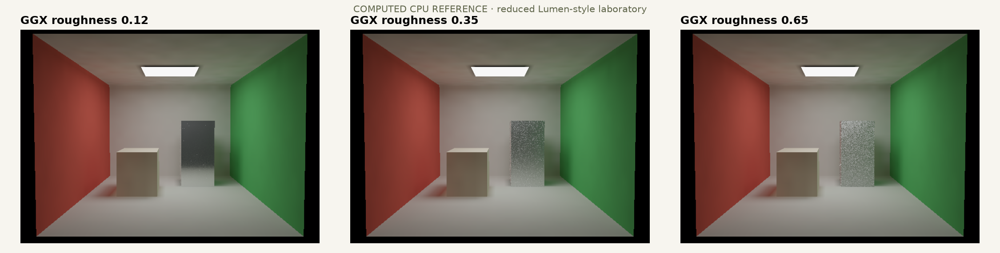
At grazing angles, sampling the full normal distribution wastes many normals hidden from the view. Visible-normal sampling instead uses over visible microfacets. Applying the same reflection Jacobian gives . The estimator weight simplifies to , or for separable Smith masking. This cancellation reduces high weights and rejected work. Heitz's visible-GGX paper provides a practical construction for sampling the distribution.
The distinction is visible in real code: the inspected Lumen shader calls ImportanceSampleVisibleGGX, transforms the sampled half-vector through the tangent basis, and reflects the camera vector. Material anisotropy can modify its directional roughness. The reference deliberately uses the easier full-NDF sampling derivation above; it must not be described as an exact copy of that Lumen shader. Both need correct ray PDFs, surface visibility, and a lighting evaluation policy. Lumen's visible-normal sampling path.
Finally, distinguish tracing geometry from shading the hit. A hardware ray can intersect an accurate triangle and still receive approximate lighting from a surface cache. Evaluating lighting at the hit can restore view-dependent material response that a diffuse cache cannot supply, at additional cost. Unreal exposes reflection hit-lighting choices for this reason. Our reference uses exact rectangles for intersection and approximate diffuse cached radiance at reflection hits: accurate intersection alone does not make the reflected image a fully path-traced solution.
Inspect what the engine makes available to reflections
The reflection view exposes Lumen's scene representation for reflection inspection. It should not be mistaken for a raw image of only the glossy block's reflected contribution. Compare its simplified representation with the lit glossy block and with the CPU roughness comparison and PDF derivation above. Reflection quality depends on intersection geometry, returned hit lighting, directional material response, and reconstruction. A change in one can dominate even when the other stages are correct.
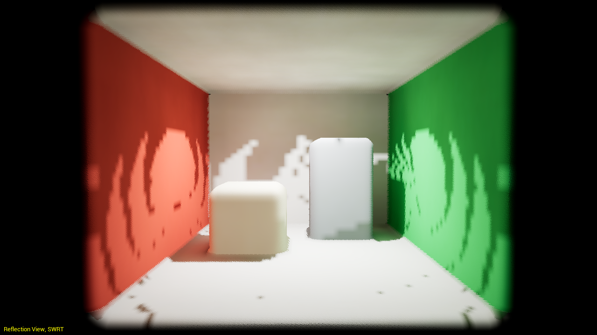
r.Lumen.Visualize=4), a diagnostic of the representation used for reflection inspection. Open image at full size.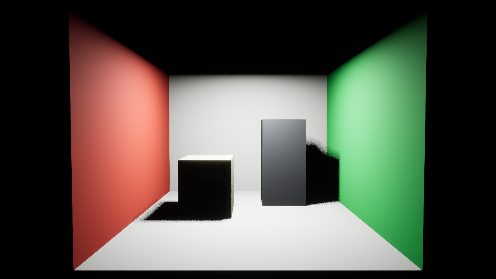
Reusing last frame's light requires evidence that it still belongs here
Real-time rendering gains enormous efficiency from temporal coherence: most of the world changes only a little between adjacent frames. A wall that received useful GI samples a moment ago probably does not need to begin with no information now. But history is associated with surfaces and lighting states, not merely with pixel coordinates. If the camera moves, the same pixel can show a different point. If the block moves away, a pixel that showed wood can now show stone.
Reprojection maps a current surface point toward where it appeared in the previous frame. Motion vectors are one useful carrier of that relationship. They require appropriate current and previous transforms, camera matrices, and deformation state. Keeping only the current bone pose can make an animated guard appear to have incorrect motion even if its current geometry is visually correct. The GI filter then receives misleading evidence about where history should be fetched.
Fetched history must be validated. Depth disagreement can indicate a newly exposed surface. A normal disagreement can indicate a different orientation. Lighting-change heuristics can reduce reliance on old samples around moving contributors. Neighborhood constraints can prevent a stale value from surviving far outside the range supported by current observations. Every rejection restores responsiveness but discards useful samples; every acceptance improves stability but risks carrying old light into a new situation.
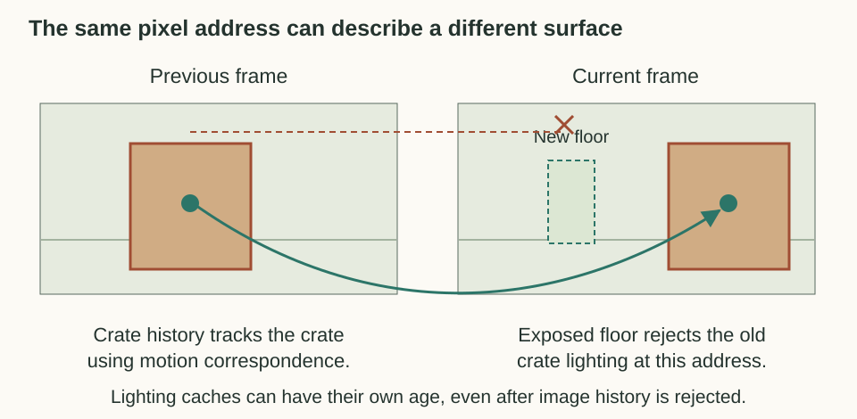
The inspected screen-probe gather initializes its maximum accumulated frame control to ten, with faster-update behavior for moving-lighting situations and several rejection controls. The C++ comments and values state the tradeoff between responsiveness and noise. This does not guarantee a fixed ten-frame visual delay: histories can be rejected, update weights vary, and separate caches have their own schedules. Treat the value as part of a filter policy, not as a stopwatch for the whole GI system.
The shader side makes the retained state tangible. LumenScreenProbeGatherTemporal.usf declares histories for diffuse indirect, backface diffuse, rough specular, short-range terms, and accumulation state. This is more than a blur applied at the end. It is a set of evolving estimates whose meaning depends on correct geometry correspondence and current sampling evidence. When changing the scene representation, those histories become clients of its identity, motion, and lifetime contracts.
There are also histories before the final image filter. Surface cards may contain older material captures. Direct-lighting atlas regions may not yet have been refreshed after the ceiling light changes. Radiosity and world-space radiance probes may still reflect earlier illumination. Even a final filter configured for immediate response cannot invent updated input that its upstream caches have not produced. Conversely, forcing every upstream cache to update every frame can remove latency at a prohibitive cost without addressing a bad reprojection vector.
The correct experiment for a ceiling light toggle is therefore staged. Hold the camera and geometry still. Toggle only the light and observe both the scene-lighting representation and the final image. If the cache itself responds slowly, examine its update budget. If the cache changes quickly but the final image trails, inspect gather and reflection history. Then repeat with a moving block to add geometric invalidation. These experiments isolate where stale information enters the chain.
A temporal design must also define discontinuities. Teleporting the camera, replacing a mesh, changing topology, or switching the rendering path can invalidate assumptions more severely than ordinary motion. Preserving history blindly makes the first few frames look smooth but wrong. Clearing everything on every small change makes them responsive but noisy. The engineering task is to describe which representation revisions invalidate which estimates, and to supply enough information for each consumer to make that decision.
Reuse history only after proving it still describes the same surface
Low ray counts produce noise. Temporal reuse replaces a single estimate with a history of estimates. For a stationary signal and independent samples, an exponential moving average obeys , where . Unrolling it separates initialization from observation weights:
LaTeX source
H_t=(1-\alpha)^tH_0+
\alpha\sum_{k=1}^{t}(1-\alpha)^{t-k}X_k.If every estimate has expectation , the mean error is . With independent noise variance , the steady-state variance sums a geometric series:
LaTeX source
\operatorname{Var}(H_\infty)
=\alpha^2\sigma^2\sum_{j=0}^{\infty}(1-\alpha)^{2j}
=\frac{\alpha}{2-\alpha}\sigma^2.Lower alpha reduces noise but delays response. After a signal changes from to , expected remaining error after updates is . This is a predictable bias from stale information. Correlated temporal samples add covariance terms to the variance expression; the independent-sample formula is not a universal performance guarantee.
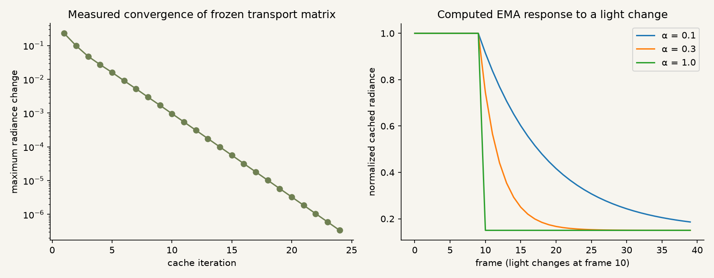
Before blending, establish correspondence. A camera translation moves a surface to a different pixel. The lab moves the camera 45 centimeters sideways, reconstructs each new hit point, projects it into the old camera, and samples the old surface data there. History is accepted only if the old image covers that projection, the exact planar face identity agrees, reconstructed world positions agree within eight centimeters, and normal dot product exceeds 0.95. Those are deliberately visible lab thresholds, not Unreal configuration defaults.
Face identity matters in this scene: the emitter lies only two centimeters below the ceiling and has the same normal direction. Position and normal tolerances alone accepted 28 ceiling-history samples for newly visible emitter pixels. The corrected test rejects those cross-face matches and asserts that none survive. For dynamic geometry, a face index alone would also need stable identity and compatible geometry/material revisions.
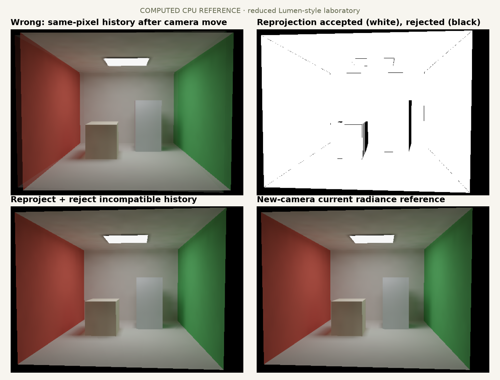
A valid projection is not sufficient if the scene itself changes. Moving an object can preserve a screen location while changing the hit identity. Changing the light preserves geometry while invalidating lighting. Changing exposure can change stored numerical values without changing physical radiance. Material versions, geometry versions, velocity, depth, normals, hit distance, and pre-exposure all participate in the appropriate history policy. Different caches need different invalidation scopes.
The inspected screen-probe filtering shader carries previous probe depth, radiance, and translated world position; it reconstructs a history screen position and applies bounds and geometric checks before gathering history. The reference's simple tests demonstrate the reason for those resources. They are not an exhaustive transcription of Lumen's temporal filter, reflection disocclusion treatment, or variance-based clamping. Screen-probe temporal resources and reprojection.
The correct fallback is an explicit low-confidence current estimate. Zeroing all lighting may produce a dark flash; keeping invalid history produces ghosting. A renderer can spend extra rays on disoccluded regions, temporarily use nearby compatible estimates, or accept more noise for a few frames. Each policy trades a visible error against work. Treating validity as data makes that trade explicit instead of burying it in a smoothing constant.
Deformation and large worlds test every approximation at once
A moving rigid block can reuse its mesh topology while its instance transform changes. An animated guard changes vertex positions relative to the instance. A spline-deformed pipe bends a static source mesh along a curve. A wind material displaces leaves according to time and position. These cases can all produce moving triangles on screen, but their auxiliary representations may have very different update mechanisms.
Hardware ray tracing can represent skinned geometry when the project and platform support the path, at the cost of maintaining the corresponding acceleration structures. Software distance fields generally do not become an exact animated copy simply because a vertex shader moved the mesh. A build-time field may describe the rest shape rather than the current pose. Thus support must be specified per consumer: main-view rasterization, shadow rendering, ray intersection, material capture, and temporal history can each have a different answer.
This checkout provides an important correction to older Lumen summaries. r.MeshCardRepresentation.SkeletalMesh initializes to one, and the helper permits card generation on supported Lumen platforms. The Nanite skinned proxy builds cards from its pre-skinned bounds and marks the representation for more permissive sampling because animation can disagree with the capture. See the enable and platform check and bounds-based card construction. This establishes that a skeletal card representation exists; it does not establish perfect pose-matched GI or exact software intersection.
Spline meshes show the same separation in another form. The Nanite spline proxy explicitly disables its distance-field representation and has code to construct a card representation. The spline proxy and card creation branch therefore prove two different facts: the surface can participate in one representation while being unavailable through another. In the dynamic ray-tracing path, the current Nanite source notes that spline or WPO geometry still uses fallback behavior rather than the stream-out route in that branch. The implementation restriction should qualify any claim about tracing the visible Nanite geometry.
Large worlds introduce scale and coverage instead of only deformation. A renderer cannot keep its finest fields, cards, shadow maps, and radiance probes uniformly dense across an arbitrarily large map. It concentrates detail around relevant views and manages more distant information through coarser or separate representations. As the camera moves, newly important regions need requests, captures, and lighting updates. Fast movement exposes the latency of all of these queues at once.
Far Field is a configurable hardware-tracing extension rather than an automatic property of every Lumen setup. Public documentation connects it to appropriate world-partition HLOD content. Here the exact distance default demonstrates why source versioning matters: this checkout initializes r.LumenScene.FarField to zero and r.LumenScene.FarField.MaxTraceDistance to 1.0e6 Unreal units. With the usual centimeter convention, that distance is ten kilometers, while public documentation text describes a one-kilometer default. The local source values are the baseline used here; project configuration can differ.
Extending the maximum ray distance alone does not supply all missing far geometry or lighting. The acceleration structure must include a suitable representation, culling distances must agree with the intended coverage, and hit lighting must have something meaningful to sample. A gap between near-scene coverage and far-scene coverage can produce missing occlusion even when both regions are individually configured to work. These are boundaries between representations, so diagnosing them requires visualizing both sides of the boundary.
The room makes a useful small-scale version of the problem. First move slowly around the matte block, then teleport to the opposite wall. The slow walk lets caches evolve with demand. The teleport asks every subsystem to discover a new visible set at once. If Nanite detail refines first, shadow pages update next, and indirect illumination settles afterward, the sequence is understandable from their different representations and budgets. It should be measured and designed, not hidden behind the claim that the scene is simply either loaded or unloaded.
Run the complete reference, then replace one representation at a time
The executable laboratory lives in Scripts/Docs/unreal_articles/labs/lumen/render.py. It depends on NumPy, SciPy, Matplotlib, and Pillow. Run it from the repository root with Python 3.12 or a compatible scientific Python environment. It regenerates every computed room figure, the numerical metrics, the scene description, and the compressed arrays. No Unreal installation is needed for this reference computation; genuine engine captures use the separate Unreal capture project described alongside those images.
python -m pip install -r Scripts/Docs/unreal_articles/labs/lumen/requirements.txt
python Scripts/Docs/unreal_articles/labs/lumen/render.pyThe script's order is the implementation order of the reduced renderer. face() establishes explicit geometry and material ownership. intersect() provides exact nearest-hit queries. Face-local texel generation creates the cache parameterization. direct() evaluates the area emitter and shadow segments. Cosine rays build the sparse visibility matrix. Repeated sparse matrix multiplication solves the sampled diffuse transport. lookup() reconstructs surface radiance from the texels. These operations do not rely on the plotting code.
capture each face's positions, normals, albedo, and emission
direct = area_light_quadrature(capture, exact_shadow_rays)
K = trace_cosine_rays_and_count_destination_texels(capture)
lighting = direct
repeat 24 times:
lighting = direct + albedo * (K @ lighting)
world_probes = trace_spherical_directions(lighting)
screen_probes = trace_cosine_directions_at_visible_surfaces(lighting)
diffuse = direct_at_pixel + pixel_albedo * compatible_probe_gather
specular = average(BRDF * traced_radiance * cosine / ray_PDF)
history = reproject_and_reject_incompatible_old_surfaces()
display = tone_map(linear_lighting)The SDF diagnostic is independent of the transport backend so that it can be compared with exact intersections without contaminating the lighting reference. Likewise, the world-probe interpolation comparison and the screen-probe gather are separate consumers of the solved surface field. The reference does not compose world-probe fallback into screen-probe rays. It demonstrates both representations and their errors independently. That boundary is intentional and visible in the code; combining them requires a defined coverage interval and a rule preventing near-field light from being counted twice.
Replace one subsystem at a time. Substitute a triangle BVH for rectangle intersections and compare ray hits. Substitute a sampled SDF for the analytic field and compare against that BVH. Replace fixed planar cards with generated orthographic captures and inspect coverage before lighting them. Move the transport gathers to compute shaders while preserving linear-array outputs for comparison. Only then introduce sparse page residency, partial updates, adaptive tracing, and history-dependent sampling. The order keeps a trustworthy reference available while introducing each approximation.
Reference buffers, units, and update rules
| Reference data | Meaning and units | Rebuild or invalidate when |
|---|---|---|
P, N, RHO, FID | World position in meters, unit normal, dimensionless diffuse reflectance, face identity | Geometry, transform, capture layout, or relevant material changes. |
D | Emitted plus direct outgoing radiance | Light, visibility, material, or surface placement changes. |
K | Dimensionless sampled cosine-visibility transfer fractions | Geometry or cache parameterization changes; not merely a light change. |
L | Total cached diffuse outgoing radiance | Its direct-light or transport inputs change; resume or restart iteration deliberately. |
| World-probe angular maps | Incoming directional radiance | Probe placement, visibility, or sampled surface lighting changes. |
| Screen-probe averages | Indirect irradiance divided by pi | Probe placement or scene lighting changes; history needs geometric validation. |
| History image and geometry | Previous estimates plus the information needed to establish correspondence | Reject per sample on disocclusion, changed geometry/material, or incompatible exposure. |
Our display function is . It is a simple compressive presentation transform, not Unreal's tone mapper. All integration, interpolation error metrics, and temporal reasoning use linear radiance before this conversion. Comparing numerical errors after tone mapping can hide large bright-region differences and exaggerate other differences. Save the linear buffers while building the renderer; screenshots alone are insufficient evidence.
Assemble a renderer whose approximations remain visible
Use the indoor experiment as a sequence of independently testable implementations. Begin with exact ray intersections against the room and direct illumination from the rectangle. Save world position, normal, material identity, first-hit distance, and visibility to the light. These buffers establish the geometry and units before introducing a cache. A diffuse room with constant reflectance is especially useful because it removes texture filtering and complex BSDFs from the first transport checks.
Next construct the surface parameterization. Give each cache texel a position, normal, material parameters, validity, and a stable relationship to its surface. Render those channels as images. The ceiling and floor may have the same material but must remain distinct surfaces. A normal or card orientation mistake can put incoming light into the wrong hemisphere while still producing an attractive warm room. Check the correspondence with exact hits: project a hit into the card, reconstruct its position, and reject matches across an unrelated surface or large depth discrepancy.
Separate the persistent lighting records by meaning
| Record | Stored meaning | What makes it stale |
|---|---|---|
| Surface material texel | Surface position/depth, normal, albedo, emissive and material capture validity. These are properties, not incoming illumination. | Geometry, material capture, parameterization or residency changes. |
| Surface lighting texel | Direct and accumulated indirect illumination or outgoing radiance, with a precisely documented convention. | Lights, emissive surfaces, occlusion, or contributing cached illumination changes. |
| World radiance probe | Directional radiance and visibility/depth support at a world location, plus update age and placement validity. | Moved occluders or lights, probe relocation, clipmap scrolling, or expired coverage. |
| Screen probe | Receiver position, normal, sampled directions, hit distances, lighting estimates and confidence for current visible surfaces. | View movement, disocclusion, geometry/deformation or material changes. |
| Reflection trace | Sample direction and density, roughness/BSDF parameters, hit identity/distance and radiance source. | A change in receiver, reflected visibility, material, or lighting. |
| Temporal sample | Radiance estimate, accumulated weight, moments or variance proxy, depth/normal and surface identity used for validation. | Failed reprojection, disocclusion, incompatible surface or reset policy. |
| Update queue | Dirty region, revision, priority, work estimate, dependencies and completion state. | A newer scene revision supersedes the queued work; completion must not publish the older result as current. |
Then solve diffuse transport over the cache with exact intersections and generous sampling. Compare a selected floor texel's direct term, first bounce, second bounce, and converged value. Hold sampled directions fixed when comparing iterations so random changes do not masquerade as convergence. The reference experiment records successive-iteration changes. The contraction proof and a posteriori bound convert those changes into an error bound for its discrete fixed point; they do not establish accuracy against the continuous rendering equation. Change cache resolution and sampling density separately to study those distinct errors.
Introduce SDF tracing as an alternative intersection provider with the same hit contract. Compare its hit/miss and hit-distance answers with exact rays before querying any lighting cache. A signed distance is a geometric lower-bound mechanism only under the assumptions derived in the lab. Interpolation, compression, nonuniform scaling, thin surfaces, and moving deformations weaken that guarantee. Keep maximum steps, minimum progress, termination tolerance, conservative safety policy, and fallback behavior explicit. A failed trace should report a reason, rather than silently return the sky for every failure.
World probes come next. Populate directional radiance at known locations, visualize their directions, and query the same floor receiver by direct integration and probe interpolation. Move a box between the probe and receiver to test leakage. A smooth weighted average of radiance across a wall is still wrong. Distance and visibility information, geometry-aware weights, placement validity, and rejection policies are part of the representation. More probes can reduce spatial approximation but cannot substitute for understanding what a query is allowed to interpolate.
Now place screen probes on the image and reconstruct lighting for full-resolution receivers. Preserve receiver depth and normal discontinuities. A low-resolution gather should not average the front of the matte block with the wall visible beside it. Trace hit distances as well as colors; they help distinguish distant smooth illumination from near-field occlusion. Compare the reconstructed output with the higher-sample reference and show an error image. A blurred image may look temporally calm while erasing contact shadows, so evaluate detail retention as well as variance.
Implement reflections as a separate transport consumer. Start with mirror rays to validate direction conventions and hit lookup; then sample a rough microfacet lobe with the derived PDF and Jacobian. Keep the reflected receiver's material evaluation separate from the material at the ray's hit. Surface-cache shading at that hit is fast but loses some directional and high-frequency information. Hit lighting performs more work there. These are choices about the radiance returned by a hit, not choices about whether a ray intersection exists.
// Dependency order for a small reference renderer, not Unreal pass names.
apply_scene_revisions()
update_geometry_and_intersection_representations()
refresh_invalid_material_captures()
evaluate_direct_surface_lighting()
advance_indirect_surface_transport()
update_prioritized_world_radiance_probes()
place_screen_probes_for_current_depth_and_normals()
trace_screen_then_world_fallbacks()
gather_diffuse_and_trace_reflections()
validate_and_reproject_previous_lighting()
filter_and_upsample_with_geometry_weights()
compose_direct_emissive_indirect_and_reflection_terms()
publish_history_with_the_scene_revision_it_describes()Finally add temporal reuse and budgeted scheduling. Reproject with the current and previous camera/object transforms, validate surface correspondence, and reset disoccluded samples. Lighting revisions can require reducing history even if the surface has not moved. Maintain a diagnostic image for each rejection reason. A history buffer with a valid UV coordinate is not necessarily valid radiance for the current scene. Likewise, a cache entry's allocation existing in memory says nothing about whether its contents describe the latest light configuration.
The production Unreal system makes these stages overlap and amortizes work across frames. Its caches have priorities, update budgets, resolution policies, and platform variants. The simple sequential pseudocode intentionally exposes dependencies before optimizing them. Once it is correct, use a render graph to schedule read/write hazards, transient buffers, and asynchronous work. Persistent cache ownership remains a scene or view-state responsibility; a transient graph texture alone does not explain how a cache survives into the next frame or how it is invalidated.
For Arda, define intersection providers, material captures, surface-lighting storage, directional-probe storage, screen reconstruction, and temporal history as separate modules connected by typed records and revisions. Keep diffuse GI and reflections as separate consumers that may share intersection and radiance services. Give every approximation a debug view and an error comparison against a slower exact or higher-sample path. With those boundaries, implementing more of Lumen becomes an evidence-driven progression: improve one representation, measure the resulting error and cost, and preserve the contracts that other stages already rely on.
Use measurements to decide what the implementation has actually earned
The downloadable metrics file records the seed, array sizes, convergence history, trace agreement, and reconstruction error from this run. The script asserts that all tested SDF rays agree on visibility, the common-hit distance error stays below one millimeter, spherical quadrature weights sum to , and the diffuse solve remains finite and nonnegative. Its random seed is fixed at 20261015; the sampler validation uses its own independent fixed seed.
These checks support specific conclusions. The analytic SDF marcher agrees with exact geometry on the tested ray family. The angular weights cover a sphere correctly. The finite sampled transport operator is contractive in this scene and converges. Screen-probe reconstruction has measurable error relative to the fine surface-cache lookup. None of these checks proves that the educational renderer reproduces Unreal Lumen or that a final image is an unbiased ground-truth solution.
When extending the renderer, add adversarial scenes before adding polish. A thin wall between two differently lit rooms tests visibility leakage. A bright emitter revealed by a camera turn tests PDF support and cache freshness. A glossy surface reflecting an off-screen moving object tests the separation of primary visibility and reflection geometry. A material change without movement tests capture invalidation. A camera teleport tests residency and disocclusion. A light switched off tests whether temporal reuse decays stale energy at the intended rate.
The essential implementation contract is now concrete. Geometry queries return hit identity and distance. Material captures describe that hit independently of the current camera. Surface lighting updates solve a discretized transport problem. Directional probes reuse expensive radiance queries over space. Screen reconstruction respects surfaces instead of blindly filtering pixels. Reflection sampling keeps the BRDF and its PDF consistent. Temporal reuse carries evidence that old and new samples correspond. That is a system a programmer can build, measure, and gradually specialize into a real-time renderer.
Source evidence and reproducibility
The source ranges below were inspected in the local Unreal 5.8.1 checkout. Their exact hashes are recorded beside the laboratory source. These are implementation anchors for the worked examples, not a claim that the reduced reference code reproduces every engine path.
- Engine/Source/Runtime/Renderer/Private/Lumen/LumenSceneData.h, lines 307–350
FLumenCard stores local/world capture placement, allocated levels, mip mappings, and ownership indices.
- Engine/Source/Runtime/Renderer/Private/Lumen/LumenSceneData.h, lines 996–1024
Frame temporaries expose captured material/depth atlases, separate lighting atlases, temporal statistics, and addressing resources.
- Engine/Source/Runtime/Renderer/Private/Lumen/LumenSceneCardCapture.cpp, lines 537–582
Card capture allocates material targets and a depth-stencil atlas.
- Engine/Source/Runtime/Renderer/Private/Lumen/LumenRadiosity.cpp, lines 20–48
Radiosity is a Surface Cache indirect gather providing multibounce diffuse; sampling and spatial filtering have explicit quality tradeoffs.
- Engine/Source/Runtime/Renderer/Private/Lumen/LumenRadianceCache.h, lines 107–122
Radiance cache update places or reuses marked probes, traces a subset, and provides interpolation resources.
- Engine/Source/Runtime/Renderer/Private/Lumen/LumenRadianceCacheInterpolation.h, lines 44–69
Radiance-cache interpolation carries indirection, radiance/irradiance, validity, occlusion/depth, clipmap transforms, and pre-exposure.
- Engine/Source/Runtime/Renderer/Private/Lumen/LumenScreenProbeGather.h, lines 30–120
Screen-probe declarations distinguish irradiance formats, tracing/gathering dimensions, reconstruction policy, and structured importance samples.
- Engine/Shaders/Private/Lumen/LumenScreenProbeTracing.usf, lines 54–79
The shader provides a distinct screen-texture trace entry point for probe rays.
- Engine/Shaders/Private/Lumen/LumenScreenProbeTracing.usf, lines 421–439
Trace compaction tests unresolved trace state and radiance-cache completion.
- Engine/Shaders/Private/Lumen/LumenScreenProbeTracing.usf, lines 549–565
Mesh distance field tracing has a separate screen-probe implementation path.
- Engine/Shaders/Private/Lumen/LumenScreenProbeTracing.usf, lines 754–785
Valid radiance-cache coverage limits trace distance before cone tracing scene voxels.
- Engine/Shaders/Private/Lumen/LumenScreenProbeImportanceSampling.usf, lines 139–190
Lighting luminance is reduced and normalized into a directional sampling PDF.
- Engine/Shaders/Private/Lumen/LumenReflections.usf, lines 370–394
The inspected reflection path uses material roughness, optional anisotropy, visible-GGX half-vector sampling, and reflected ray direction.
- Engine/Shaders/Private/Lumen/LumenScreenProbeFiltering.usf, lines 190–253
Temporal probe filtering has prior depth, radiance, world position, history projection, and bounds checks.